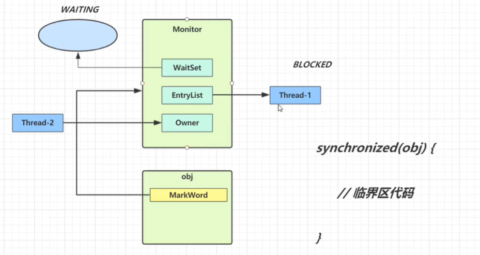
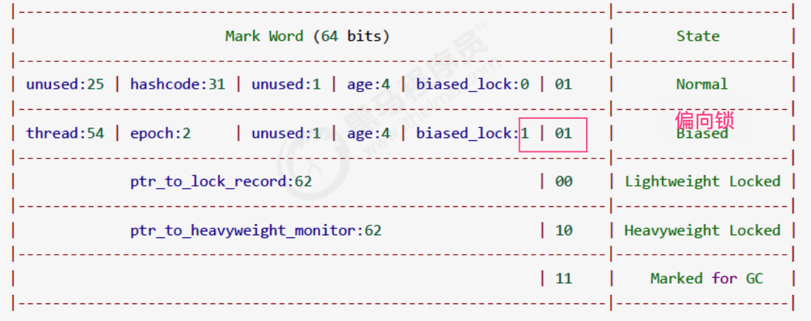
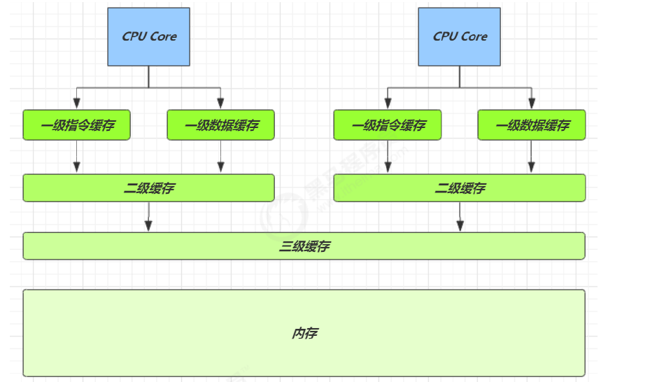
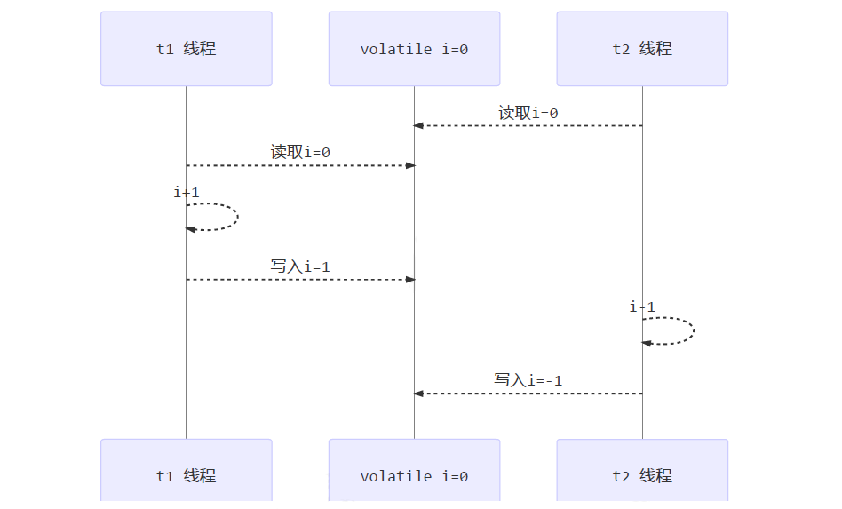

⓪基础
❶进程&线程
- 进程：指一个内存中运行的应用程序，每个进程都有自己独立的一块内存空间。
- 线程：比进程更小的执行单位，一个进程可以启动多个线程，每条线程并行执行不同的任务。
❷并行&并发
- 并行（Parallel）：在同一时刻，有多个指令在多个 CPU 上同时执行。
- 并发（Concurrent）：在同一时刻，有多个指令在单个 CPU 上交替执行。微观串行，宏观并行
❸同步&异步
- 同步（sync）：需要等待结果返回，才能继续运行
- 异步（Async）：不需要等待结果返回，就能继续运行
①线程
❶线程创建
Thread
@Slf4j
public class ThreadCreate {
public static void main(String[] args) {
Thread t1 = new Thread("t1"){
@Override
public void run() {
log.debug("hello");
}
};
// 启动线程
t1.start();
log.debug("do other things ...");
}
}
Runnable
@Slf4j
public class ThreadCreate {
public static void main(String[] args) {
Runnable task2 = new Runnable() {
@Override
public void run(){
log.debug("hello");
}
};
Thread t2 = new Thread(task2, "t2");
// 启动线程
t2.start();
log.debug("do other things ...");
}
}
//写法2
Thread t4 = new Thread(new Runnable() {
@Override
public void run() {
log.debug("hello");
}
},"t4");
t4.start();
Java 8 以后可以使用 lambda 精简代码
Runnable task2 = () -> log.debug("hello");
Thread t4 = new Thread(task2, "t4");
t4.start();
//写法2
Thread t4 = new Thread(() ->log.debug("hello"),"t4");
t4.start();
Callable
FutureTask 能够接收 Callable 类型的参数，用来处理有返回结果的情况
@Slf4j
public class ThreadCreate {
public static void main(String[] args) {
FutureTask<Integer> task3 = new FutureTask<>(new Callable<Integer>() {
@Override
public Integer call() throws Exception {
log.debug("hello");
return 100;
}
});
Thread t5 = new Thread(task3, "t5");
t5.start();
// 主线程阻塞，同步等待 task 执行完毕的结果
// 获取call方法返回的结果（正常/异常结果）
Integer result = task3.get();
log.debug("结果是:{}", result);
}
}
//简写
FutureTask<Integer> task3 = new FutureTask<>(() -> {
log.debug("hello");
return 100;
});
Thread t5 = new Thread(task3, "t5");
t5.start();
// 主线程阻塞，同步等待 task 执行完毕的结果
// 获取call方法返回的结果（正常/异常结果）
Integer result = task3.get();
log.debug("结果是:{}", result);
❷线程方法
API
| 方法 | 说明 |
|---|---|
| public void start() | 启动一个新线程，Java虚拟机调用此线程的 run 方法 |
| public void run() | 线程启动后调用该方法 |
| public void setName(String name) | 给当前线程取名字 |
| public void getName() | 获取当前线程的名字 线程存在默认名称：子线程是 Thread-索引，主线程是 main |
| public static Thread currentThread() | 获取当前线程对象 |
| public static void sleep(long time) | 让当前线程休眠多少毫秒再继续执行 Thread.sleep(0) : 让操作系统立刻重新进行一次 CPU 竞争 |
| public static native void yield() | 提示线程调度器让出当前线程对 CPU 的使用 |
| public final int getPriority() | 返回此线程的优先级 |
| public final void setPriority(int priority) | 更改此线程的优先级，常用 1 5 10 |
| public void interrupt() | 中断这个线程，异常处理机制 |
| public static boolean interrupted() | 判断当前线程是否被打断，清除打断标记 |
| public boolean isInterrupted() | 判断当前线程是否被打断，不清除打断标记 |
| public final void join() | 等待这个线程结束 |
| public final void join(long millis) | 等待这个线程死亡 millis 毫秒，0 意味着永远等待 |
| public final native boolean isAlive() | 线程是否存活（还没有运行完毕） |
| public final void setDaemon(boolean on) | 将此线程标记为守护线程或用户线程 |
run & start
- 直接调用 run 是在主线程中执行了 run，没有启动新的线程
@Slf4j(topic = "test")
public class RunAndStart {
public static void main(String[] args) {
Thread t1 = new Thread(() -> {
log.debug("测试！！！");
}, "t1");
t1.run();
log.debug("do other things ...");
}
}
16:09:05.495 [main] DEBUG test - 测试！！！
16:09:05.496 [main] DEBUG test - do other things ...
- 使用 start 是启动新的线程，通过新的线程间接执行 run 中的代码
@Slf4j(topic = "test")
public class RunAndStart {
public static void main(String[] args) {
Thread t1 = new Thread(() -> {
log.debug("测试！！！");
}, "t1");
t1.start();
log.debug("do other things ...");
}
}
16:10:24.051 [main] DEBUG test - do other things ...
16:10:24.051 [t1] DEBUG test - 测试！！！
sleep & yield
sleep：
调用 sleep 会让当前线程从
Running进入Timed Waiting状态（阻塞）sleep() 方法的过程中，线程不会释放对象锁
其它线程可以使用 interrupt 方法打断正在睡眠的线程，这时 sleep 方法会抛出 InterruptedException
睡眠结束后的线程未必会立刻得到执行，需要抢占 CPU
建议用 TimeUnit 的 sleep 代替 Thread 的 sleep 来获得更好的可读性
TimeUnit.SECONDS.sleep(10);
yield：
- 调用 yield 会让提示线程调度器让出当前线程对 CPU 的使用
- 具体的实现依赖于操作系统的任务调度器
- 会放弃 CPU 资源，锁资源不会释放
join
等待这个线程结束
原理：调用者轮询检查线程 alive 状态，t1.join() 等价于：
public final synchronized void join(long millis) throws InterruptedException {
// 调用者线程进入 thread 的 waitSet 等待, 直到当前线程运行结束
while (isAlive()) {
wait(0);
}
}
join 方法是被 synchronized 修饰的，本质上是一个对象锁，其内部的 wait 方法调用也是释放锁的，但是释放的是当前的线程对象锁，而不是外面的锁
当调用某个线程的 join 方法后，该线程抢占到 CPU 资源，就不再释放，直到线程执行完毕
线程同步：
- join 实现线程同步，因为会阻塞等待另一个线程的结束，才能继续向下运行
- 需要外部共享变量，不符合面向对象封装的思想
- 必须等待线程结束，不能配合线程池使用
- Future 实现同步：get() 方法阻塞等待执行结果
- main 线程接收结果
- get 方法是让调用线程同步等待
interrupt
打断线程
interrupt()：打断当前线程，异常处理机制
interrupted()：判断当前线程是否被打断，打断返回 true，清除打断标记
isInterrupted()：判断当前线程是否被打断，不清除打断标记
- sleep、wait、join 方法都会让线程进入阻塞状态，打断线程会清空打断状态（false）
public static void main(String[] args) throws InterruptedException {
Thread t1 = new Thread(()->{
try {
Thread.sleep(1000);
} catch (InterruptedException e) {
e.printStackTrace();
}
}, "t1");
t1.start();
Thread.sleep(500);
t1.interrupt();
System.out.println(" 打断状态: " + t1.isInterrupted());// 打断状态: false
}
- 打断正常运行的线程：不会清空打断状态（true）
public static void main(String[] args) throws Exception {
Thread t2 = new Thread(()->{
while(true) {
Thread current = Thread.currentThread();
boolean interrupted = current.isInterrupted();
if(interrupted) {
System.out.println(" 打断状态: " + interrupted);//打断状态: true
break;
}
}
}, "t2");
t2.start();
Thread.sleep(500);
t2.interrupt();
}
打断 park
park 作用类似 sleep，打断 park 线程，不会清空打断状态（true）
public static void main(String[] args) throws Exception {
Thread t1 = new Thread(() -> {
System.out.println("park...");
LockSupport.park();
System.out.println("unpark...");
System.out.println("打断状态：" + Thread.currentThread().isInterrupted());//打断状态：true
}, "t1");
t1.start();
Thread.sleep(2000);
t1.interrupt();
}
如果打断标记已经是 true, 则 park 会失效
LockSupport.park();
System.out.println("unpark...");
LockSupport.park();//失效，不会阻塞
System.out.println("unpark...");//和上一个unpark同时执行
可以修改获取打断状态方法，使用 Thread.interrupted()，清除打断标记
终止模式
终止模式之两阶段终止模式：Two Phase Termination
目标：在一个线程 T1 中如何优雅终止线程 T2？优雅指的是给 T2 一个后置处理器
错误思想：
- 使用线程对象的 stop() 方法停止线程：stop 方法会真正杀死线程，如果这时线程锁住了共享资源，当它被杀死后就再也没有机会释放锁，其它线程将永远无法获取锁
- 使用 System.exit(int) 方法停止线程：目的仅是停止一个线程，但这种做法会让整个程序都停止
两阶段终止模式图示：

打断线程可能在任何时间，所以需要考虑在任何时刻被打断的处理方法：
public class Test {
public static void main(String[] args) throws InterruptedException {
TwoPhaseTermination tpt = new TwoPhaseTermination();
tpt.start();
Thread.sleep(3500);
tpt.stop();
}
}
class TwoPhaseTermination {
private Thread monitor;
// 启动监控线程
public void start() {
monitor = new Thread(new Runnable() {
@Override
public void run() {
while (true) {
Thread thread = Thread.currentThread();
if (thread.isInterrupted()) {
System.out.println("后置处理");
break;
}
try {
Thread.sleep(1000); // 睡眠
System.out.println("执行监控记录"); // 在此被打断不会异常
} catch (InterruptedException e) { // 在睡眠期间被打断，进入异常处理的逻辑
e.printStackTrace();
// 重新设置打断标记，打断 sleep 会清除打断状态
thread.interrupt();
}
}
}
});
monitor.start();
}
// 停止监控线程
public void stop() {
monitor.interrupt();
}
}
daemon
Thread t = new Thread() {
@Override
public void run() {
System.out.println("running");
}
};
// 设置该线程为守护线程
t.setDaemon(true);
t.start();
用户线程：平常创建的普通线程
守护线程：服务于用户线程，只要其它非守护线程运行结束了，即使守护线程代码没有执行完，也会强制结束。
常见的守护线程：
- 垃圾回收器线程就是一种守护线程
- Tomcat 中的 Acceptor 和 Poller 线程都是守护线程，所以 Tomcat 接收到 shutdown 命令后，不会等待它们处理完当前请求
❸线程原理
Java 虚拟机栈（Java Virtual Machine Stacks）：每个线程启动后，虚拟机就会为其分配一块栈内存
- 每个栈由多个栈帧（Frame）组成，对应着每次方法调用时所占用的内存
- 每个线程只能有一个活动栈帧，对应着当前正在执行的那个方法
线程上下文切换（Thread Context Switch）：一些原因导致 CPU 不再执行当前线程，转而执行另一个线程
- 线程的 CPU 时间片用完
- 垃圾回收
- 有更高优先级的线程需要运行
- 线程自己调用了 sleep、yield、wait、join、park 等方法
程序计数器（Program Counter Register）：记录正在执行的字节码指令地址，是线程私有的
当 Context Switch 发生时，需要由操作系统保存当前线程的状态（PCB 中），并恢复另一个线程的状态，包括程序计数器、虚拟机栈中每个栈帧的信息，如局部变量、操作数栈、返回地址等
Java 中 main 方法启动的是一个进程也是一个主线程，main 方法里面的其他线程均为子线程，main 线程是这些线程的父线程
❹线程状态
操作系统进程的状态（5种）：创建态（new）、就绪态（ready）、运行态（running）、阻塞态（waiting）、终止态（terminated）

在 Java API 中 java.lang.Thread.State 这个枚举中给出了六种线程状态：
| 线程状态 | 导致状态发生条件 |
|---|---|
| NEW（新建） | 线程刚被创建，但是并未启动，还没调用 start 方法，只有线程对象，没有线程特征 |
| Runnable（可运行） | 线程可以在 Java 虚拟机中运行的状态，可能正在运行自己代码，也可能没有，这取决于操作系统处理器，调用了 t.start() 方法：就绪（经典叫法） |
| Blocked（阻塞） | 当一个线程试图获取一个对象锁，而该对象锁被其他的线程持有，则该线程进入 Blocked 状态；当该线程持有锁时，该线程将变成 Runnable 状态 |
| Waiting（无限等待） | 一个线程在等待另一个线程执行一个（唤醒）动作时，该线程进入 Waiting 状态，进入这个状态后不能自动唤醒，必须等待另一个线程调用 notify 或者 notifyAll 方法才能唤醒 |
| Timed Waiting （限期等待） | 有几个方法有超时参数，调用将进入 Timed Waiting 状态，这一状态将一直保持到超时期满或者接收到唤醒通知。带有超时参数的常用方法有 Thread.sleep 、Object.wait |
| Teminated（结束） | run 方法正常退出而死亡，或者因为没有捕获的异常终止了 run 方法而死亡 |
❺线程状态转换

①NEW → RUNNABLE：
- 当调用
t.start()方法时，t 线程从 NEW → RUNNABLE
②RUNNABLE ⇆ WAITING
t 线程用 synchronized(obj) 获取了对象锁后
调用
obj.wait()方法时，t 线程从 RUNNABLE → WAITING调用
obj.notify()，obj.notifyAll()，t.interrupt()时竞争锁成功，t 线程从 WAITING → RUNNABLE
竞争锁失败，t 线程从 WAITING → BLOCKED
③RUNNABLE ⇆ WAITING
- 当前线程调用
t.join()方法时，当前线程从 RUNNABLE → WAITING- 注意是当前线程在 t 线程对象的监视器上等待
- t 线程运行结束或调用了当前线程的
interrupt()时，当前线程从 WAITING → RUNNABLE
④RUNNABLE ⇆ WAITING
- 当前线程调用
LockSupport.park()方法会让当前线程从 RUNNABLE → WAITING - 调用
LockSupport.unpark(目标线程)或调用了线程 的interrupt()，会让目标线程从 WAITING →RUNNABLE
⑤RUNNABLE ⇆ TIMED_WAITING
t 线程用 synchronized(obj) 获取了对象锁后
- 调用
obj.wait(long n)方法时，t 线程从 RUNNABLE → TIMED_WAITING - t 线程等待时间超过了 n 毫秒，或调用
obj.notify()，obj.notifyAll()，t.interrupt()时- 竞争锁成功，t 线程从 TIMED_WAITING → RUNNABLE
- 竞争锁失败，t 线程从 TIMED_WAITING → BLOCKED
⑥RUNNABLE ⇆ TIMED_WAITING
- 当前线程调用
t.join(long n)方法时，当前线程从 RUNNABLE → TIMED_WAITING- 注意是当前线程在t 线程对象的监视器上等待
- 当前线程等待时间超过了 n 毫秒或t 线程运行结束，或调用了当前线程的
interrupt()时，当前线程从TIMED_WAITING → RUNNABLE
⑦RUNNABLE ⇆ TIMED_WAITING
- 当前线程调用
Thread.sleep(long n)，当前线程从 RUNNABLE → TIMED_WAITING - 当前线程等待时间超过了 n 毫秒，当前线程从 TIMED_WAITING → RUNNABLE
⑧RUNNABLE ⇆ TIMED_WAITING
- 当前线程调用
LockSupport.parkNanos(long nanos)或LockSupport.parkUntil(long millis)时，当前线程从 RUNNABLE → TIMED_WAITING - 调用
LockSupport.unpark(目标线程)或调用了线程 的interrupt()，或是等待超时，会让目标线程从TIMED_WAITING → RUNNABLE
⑨RUNNABLE ⇆ BLOCKED
t 线程用
synchronized(obj)获取了对象锁时，如果竞争失败，从 RUNNABLE → BLOCKED持 obj 锁线程的同步代码块执行完毕，会唤醒该对象上所有 BLOCKED 的线程重新竞争
- 如果其中 t 线程竞争成功，从 BLOCKED → RUNNABLE
- 其它失败的线程仍然 BLOCKED
⑩RUNNABLE ⇆ TERMINATED
- 当前线程所有代码运行完毕，进入 TERMINATED

总结
NEW → RUNNABLE：当调用 t.start() 方法时，由 NEW → RUNNABLE
RUNNABLE ⇆ WAITING：
调用 obj.wait() 方法时，t 线程从 RUNNABLE → WAITING
调用 obj.notify()、obj.notifyAll()、t.interrupt()：
竞争锁成功，线程从 WAITING → RUNNABLE
- 竞争锁失败，线程从 WAITING → BLOCKED
当前线程调用 t.join() 方法，当前线程从 RUNNABLE → WAITING
当前线程调用 LockSupport.park() 方法，当前线程从 RUNNABLE → WAITING
RUNNABLE ⇆ TIMED_WAITING：调用 obj.wait(long n) 方法、调用 t.join(long n) 方法、调用 Thread.sleep(long n)
RUNNABLE ⇆ BLOCKED：线程用 synchronized(obj) 获取了对象锁时竞争失败
❻线程查看命令
windows
- 任务管理器可以查看进程和线程数，也可以用来杀死进程
tasklist查看进程taskkill杀死进程
linux
ps -ef查看所有进程ps -fT -p <PID>查看某个进程（PID）的所有线程kill杀死进程top按大写 H 切换是否显示线程top -H -p <PID>查看某个进程（PID）的所有线程
Java
jps命令查看所有 Java 进程jstack <PID>查看某个 Java 进程（PID）的所有线程状态jconsole查看某个 Java 进程中线程的运行情况（图形界面）# jconsole 远程监控配置 java -Djava.rmi.server.hostname=`ip地址` -Dcom.sun.management.jmxremote - Dcom.sun.management.jmxremote.port=`连接端口` -Dcom.sun.management.jmxremote.ssl=是否安全连接 -Dcom.sun.management.jmxremote.authenticate=是否认证 java类
②同步
❶临界区-Critical Section
一段代码块内如果存在对共享资源的多线程读写操作，称这段代码块为临界区
static int counter = 0;
static void increment()
// 临界区
{
counter++;
}
static void decrement()
// 临界区
{
counter--;
}
❷竞态条件-Race Condition
多个线程在临界区内执行，由于代码的执行序列不同而导致结果无法预测，称之为发生了竞态条件
一个程序运行多个线程是没有问题，多个线程读共享资源也没有问题，在多个线程对共享资源读写操作时发生指令交错，就会出现问题
为了避免临界区的竞态条件发生（解决线程安全问题）：
- 阻塞式的解决方案：synchronized，lock
- 非阻塞式的解决方案：原子变量
❸synchronized
锁使用
synchronized 是可重入、不公平的重量级锁
synchronized：对象锁，保证了临界区内代码的原子性，采用互斥的方式让同一时刻至多只有一个线程能持有对象锁，其它线程获取这个对象锁时会阻塞，保证拥有锁的线程可以安全的执行临界区内的代码，不用担心线程上下文切换
互斥和同步都可以采用 synchronized 关键字来完成，区别：
- 互斥是保证临界区的竞态条件发生，同一时刻只能有一个线程执行临界区代码
- 同步是由于线程执行的先后、顺序不同、需要一个线程等待其它线程运行到某个点
同步代码块
synchronized(锁对象){
// 访问共享资源的核心代码
}
实例：
public class demo {
static int counter = 0;
//static修饰，则元素是属于类本身的，不属于对象 ，与类一起加载一次，只有一个
static final Object obj = new Object();
public static void main(String[] args) throws InterruptedException {
Thread t1 = new Thread(() -> {
for (int i = 0; i < 5000; i++) {
synchronized (obj) {
counter++;
}
}
}, "t1");
Thread t2 = new Thread(() -> {
for (int i = 0; i < 5000; i++) {
synchronized (obj) {
counter--;
}
}
}, "t2");
t1.start();
t2.start();
t1.join();
t2.join();
System.out.println(counter);
}
}
同步方法
解决线程安全问题的核心方法是使用锁，每次只能一个线程进入访问
synchronized 修饰的方法的不具备继承性，所以子类是线程不安全的
如果子类的方法也被 synchronized 修饰，两个锁对象其实是一把锁，而且是子类对象作为锁
用法：直接给方法加上一个修饰符 synchronized
//同步方法
修饰符 synchronized 返回值类型 方法名(方法参数) {
方法体；
}
//同步静态方法
修饰符 static synchronized 返回值类型 方法名(方法参数) {
方法体；
}
如果方法是实例方法：同步方法默认用 this 作为的锁对象
public synchronized void test() {} //等价于 public void test() { synchronized(this) {} }如果方法是静态方法：同步方法默认用类名 .class 作为的锁对象
class Test{ public synchronized static void test() {} } //等价于 class Test{ public void test() { synchronized(Test.class) {} } }
线程八锁
线程八锁就是考察 synchronized 锁住的是哪个对象
说明：主要关注锁住的对象是不是同一个
- 锁住类对象，所有类的实例的方法都是安全的，类的所有实例都相当于同一把锁
- 锁住 this 对象，只有在当前实例对象的线程内是安全的，如果有多个实例就不安全
线程不安全：因为锁住的不是同一个对象，线程 1 调用 a 方法锁住的类对象和线程 2 调用 b 方法锁住的 n2 对象，不是同一个对象
class Number{
public static synchronized void a(){
Thread.sleep(1000);
System.out.println("1");
}
public synchronized void b() {
System.out.println("2");
}
}
public static void main(String[] args) {
Number n1 = new Number();
Number n2 = new Number();
new Thread(()->{ n1.a(); }).start();
new Thread(()->{ n2.b(); }).start();
}
线程安全：因为 n1 调用 a() 方法，锁住的是类对象，n2 调用 b() 方法，锁住的也是类对象，所以线程安全
class Number{
public static synchronized void a(){
Thread.sleep(1000);
System.out.println("1");
}
public static synchronized void b() {
System.out.println("2");
}
}
public static void main(String[] args) {
Number n1 = new Number();
Number n2 = new Number();
new Thread(()->{ n1.a(); }).start();
new Thread(()->{ n2.b(); }).start();
}
锁原理
Monitor
Monitor 被翻译为监视器或管程：每个 Java 对象都可以关联一个 Monitor 对象，Monitor 也是 class，其实例存储在堆中，如果使用 synchronized 给对象上锁（重量级）之后，该对象头的 Mark Word 中就被设置指向 Monitor 对象的指针，这就是重量级锁
Mark Word：用于存储对象自身的运行时数据， 如哈希码（HashCode）、GC 分代年龄、锁状态标志（最后两位）、线程持有的锁、偏向线程ID、偏向时间戳等等。最后两位是锁标志位
32 位虚拟机 Mark Word
|-------------------------------------------------------|--------------------|
| Mark Word (32 bits) | State |
|-------------------------------------------------------|--------------------|
| hashcode:25 | age:4 | biased_lock:0 | 01 | Normal |
|-------------------------------------------------------|--------------------|
| thread:23 | epoch:2 | age:4 | biased_lock:1 | 01 | Biased |
|-------------------------------------------------------|--------------------|
| ptr_to_lock_record:30 | 00 | Lightweight Locked |
|-------------------------------------------------------|--------------------|
| ptr_to_heavyweight_monitor:30 | 10 | Heavyweight Locked |
|-------------------------------------------------------|--------------------|
| | 11 | Marked for GC |
|-------------------------------------------------------|--------------------|
64 位虚拟机 Mark Word
|--------------------------------------------------------------------|--------------------|
| Mark Word (64 bits) | State |
|--------------------------------------------------------------------|--------------------|
| unused:25 | hashcode:31 | unused:1 | age:4 | biased_lock:0 | 01 | Normal |
|--------------------------------------------------------------------|--------------------|
| thread:54 | epoch:2 | unused:1 | age:4 | biased_lock:1 | 01 | Biased |
|--------------------------------------------------------------------|--------------------|
| ptr_to_lock_record:62 | 00 | Lightweight Locked |
|--------------------------------------------------------------------|--------------------|
| ptr_to_heavyweight_monitor:62 | 10 | Heavyweight Locked |
|--------------------------------------------------------------------|--------------------|
| | 11 | Marked for GC |
|--------------------------------------------------------------------|--------------------|
工作流程：
- 开始时 Monitor 中 Owner 为 null
- 当 Thread-2 执行
synchronized(obj)就会将 Monitor 的所有者 Owner 置为 Thread-2，Monitor 中只能有一个 Owner，obj 对象的 Mark Word 指向 Monitor，把对象原有的 MarkWord 存入线程栈中的锁记录中（轻量级锁部分详解） - 在 Thread-2 上锁的过程，Thread-3、Thread-4、Thread-5 也执行
synchronized(obj)，就会进入 EntryList BLOCKED（双向链表） - Thread-2 执行完同步代码块的内容，根据 obj 对象头中 Monitor 地址寻找，设置 Owner 为空，把线程栈的锁记录中的对象头的值设置回 MarkWord
- 唤醒 EntryList 中等待的线程来竞争锁，竞争是非公平的，如果这时有新的线程想要获取锁，可能直接就抢占到了，阻塞队列的线程就会继续阻塞
- WaitSet 中的 Thread-0，是以前获得过锁，但条件不满足进入 WAITING 状态的线程（wait-notify 机制）

注意：
- synchronized 必须是进入同一个对象的 Monitor 才有上述的效果
- 不加 synchronized 的对象不会关联监视器，不遵从以上规则
字节码
public static void main(String[] args) {
Object lock = new Object();
synchronized (lock) {
System.out.println("ok");
}
}
0: new #2 // new Object
3: dup
4: invokespecial #1 // invokespecial <init>:()V，非虚方法
7: astore_1 // lock引用 -> lock
8: aload_1 // lock （synchronized开始）
9: dup // 一份用来初始化，一份用来引用
10: astore_2 // lock引用 -> slot 2
11: monitorenter // 【将 lock对象 MarkWord 置为 Monitor 指针】
12: getstatic #3 // System.out
15: ldc #4 // "ok"
17: invokevirtual #5 // invokevirtual println:(Ljava/lang/String;)V
20: aload_2 // slot 2(lock引用)
21: monitorexit // 【将 lock对象 MarkWord 重置, 唤醒 EntryList】
22: goto 30
25: astore_3 // any -> slot 3
26: aload_2 // slot 2(lock引用)
27: monitorexit // 【将 lock对象 MarkWord 重置, 唤醒 EntryList】
28: aload_3
29: athrow
30: return
Exception table:
from to target type
12 22 25 any
25 28 25 any
LineNumberTable: ...
LocalVariableTable:
Start Length Slot Name Signature
0 31 0 args [Ljava/lang/String;
8 23 1 lock Ljava/lang/Object;
说明：
- 通过异常 try-catch 机制，确保一定会被解锁
- 方法级别的 synchronized 不会在字节码指令中有所体现
锁升级
升级过程
synchronized 是可重入、不公平的重量级锁，所以可以对其进行优化
无锁 -> 偏向锁 -> 轻量级锁 -> 重量级锁 // 随着竞争的增加，只能锁升级，不能降级


偏向锁
偏向锁的思想是偏向于让第一个获取锁对象的线程，这个线程之后重新获取该锁不再需要同步操作：
- 当锁对象第一次被线程获得的时候进入偏向状态，标记为
101，同时使用 CAS 操作将线程 ID 记录到 Mark Word。如果 CAS 操作成功，这个线程以后进入这个锁相关的同步块，查看这个线程 ID 是自己的就表示没有竞争，就不需要再进行任何同步操作 - 当有另外一个线程去尝试获取这个锁对象时，偏向状态就宣告结束，此时撤销偏向（Revoke Bias）后恢复到未锁定或轻量级锁状态

biased_lock: 偏向锁是否开启 默认开启，即为1
一个对象创建时：
- 如果没有开启偏向锁，那么对象创建后，markword 值为 0x01 即最后 3 位为 001，这时它的 hashcode、age 都为 0，第一次用到 hashcode 时才会赋值
- 如果开启了偏向锁（默认开启），那么对象创建后，MarkWord 值为 0x05 即最后 3 位为 101，thread、epoch、age 都为 0
- 偏向锁是默认是延迟的，不会在程序启动时立即生效，如果想避免延迟，可以加 VM 参数
-XX:BiasedLockingStartupDelay=0来禁用延迟。JDK 8 延迟 4s 开启偏向锁原因：在刚开始执行代码时，会有好多线程来抢锁，如果开偏向锁效率反而降低 - 添加 VM 参数
-XX:-UseBiasedLocking禁用偏向锁
偏向锁只在第一次使用 CAS 将线程 ID 设置到对象的 Mark Word 头，之后发现这个线程 ID 是自己的就表示没有竞争，不用重新 CAS。以后只要不发生竞争，这个对象就归该线程所有。轻量级锁在没有竞争时（就自己这个线程），每次重入仍然需要执行 CAS 操作。
撤销偏向锁的状态：
- 调用对象的 hashCode：偏向锁的对象 MarkWord 中存储的是线程 id，调用 hashCode 导致偏向锁被撤销
- 当有其它线程使用偏向锁对象时，会将偏向锁升级为轻量级锁
- 调用 wait/notify，需要申请 Monitor，进入 WaitSet
批量撤销：如果对象被多个线程访问，但没有竞争，这时偏向了线程 T1 的对象仍有机会重新偏向 T2，重偏向会重置对象的 Thread ID
批量重偏向：当撤销偏向锁阈值超过 20 次后，JVM 会觉得是不是偏向错了，于是在给这些对象加锁时重新偏向至加锁线程
批量撤销：当撤销偏向锁阈值超过 40 次后，JVM 会觉得自己确实偏向错了，根本就不该偏向，于是整个类的所有对象都会变为不可偏向的，新建的对象也是不可偏向的
轻量级锁
一个对象有多个线程要加锁，但加锁的时间是错开的（没有竞争），可以使用轻量级锁来优化，轻量级锁对使用者是透明的（不可见）
可重入锁：线程可以进入任何一个它已经拥有的锁所同步着的代码块，可重入锁最大的作用是避免死锁
轻量级锁在没有竞争时（锁重入时），每次重入仍然需要执行 CAS 操作，Java 6 才引入的偏向锁来优化
CAS机制：Compare And Swap，表示比较并交换
锁重入实例：
static final Object obj = new Object();
public static void method1() {
synchronized( obj ) {
// 同步块 A
method2();
}
}
public static void method2() {
synchronized( obj ) {
// 同步块 B
}
}
1.创建锁记录（Lock Record）对象，每个线程的栈帧都会包含一个锁记录的结构，存储锁定对象的 Mark Word（Hashcode，Age，Bias 01（无锁））

2.让锁记录中 Object reference 指向锁住的对象，并尝试用 CAS 替换 Object 的 Mark Word（loack record 地址 00（轻量级锁）），将 Mark Word 的值存入锁记录
如果 CAS 替换成功，对象头中存储了锁记录地址和状态 00（轻量级锁） ，表示由该线程给对象加锁

如果 CAS 失败，有两种情况：
- 如果是其它线程已经持有了该 Object 的轻量级锁，这时表明有竞争，进入锁膨胀过程
- 如果是线程自己执行了 synchronized 锁重入，就再添加一条 Lock Record 作为重入的计数，存储null

3.当退出 synchronized 代码块（解锁时）
- 如果有取值为 null 的锁记录，表示有重入，这时重置锁记录，表示重入计数减 1
- 如果锁记录的值不为 null，这时使用 CAS 将 Mark Word 的值恢复给对象头
- 成功，则解锁成功
- 失败，说明轻量级锁进行了锁膨胀或已经升级为重量级锁，进入重量级锁解锁流程
锁膨胀/重量级锁
在尝试加轻量级锁的过程中，CAS 操作无法成功，可能是其它线程为此对象加上了轻量级锁（有竞争），这时需要进行锁膨胀，将轻量级锁变为重量级锁
- 当 Thread-1 进行轻量级加锁时，Thread-0 已经对该对象加了轻量级锁

- Thread-1 加轻量级锁失败，进入锁膨胀流程：为 Object 对象申请 Monitor 锁，通过 Object 对象头获取到持锁线程，将 Monitor 的 Owner 置为 Thread-0，将 Object 的对象头指向重量级锁地址，然后自己进入 Monitor 的 EntryList BLOCKED

- 当 Thread-0 退出同步块解锁时，使用 CAS 将 Mark Word 的值恢复给对象头失败，这时进入重量级解锁流程，即按照 Monitor 地址找到 Monitor 对象，设置 Owner 为 null，唤醒 EntryList 中 BLOCKED 线程
锁优化
自旋锁
重量级锁竞争时，尝试获取锁的线程不会立即阻塞，可以使用自旋（默认 10 次）来进行优化，采用循环的方式去尝试获取锁
- 自旋占用 CPU 时间，单核 CPU 自旋就是浪费时间，因为同一时刻只能运行一个线程，多核 CPU 自旋才能发挥优势
- 自旋失败的线程会进入阻塞状态
优点：不会进入阻塞状态，减少线程上下文切换的消耗
缺点：当自旋的线程越来越多时，会不断的消耗 CPU 资源
自旋锁情况：
| 自旋成功的情况 | 自旋失败的情况 |
|---|---|
 |
 |
自旋锁说明：
- 在 Java 6 之后自旋锁是自适应的，比如对象刚刚的一次自旋操作成功过，那么认为这次自旋成功的可能性会高，就多自旋几次；反之，就少自旋甚至不自旋，比较智能
- Java 7 之后不能控制是否开启自旋功能，由 JVM 控制
锁消除
锁消除是指对于被检测出不可能存在竞争的共享数据的锁进行消除，这是 JVM 即时编译器的优化
锁消除主要是通过逃逸分析来支持，如果堆上的共享数据不可能逃逸出去被其它线程访问到，那么就可以把它们当成私有数据对待，也就可以将它们的锁进行消除（同步消除：JVM 逃逸分析）
同步消除 (Synchronization Elimination)：线程同步本身比较耗时，如果确定一个对象不会逃逸出线程，不被其它线程访问到，那对象的读写就不会存在竞争，则可以消除对该对象的同步锁，通过 -XX:+EliminateLocks 可以开启同步消除 ( - 号关闭)
public class MyBenchmark {
static int x = 0;
public void a() throws Exception {
x++;
}
public void b() throws Exception {
Object o = new Object();
synchronized (o) {
x++;
}
}
}
a方法和b方法执行效率差不多，应为b方法中o对象不会逃逸出线程，不被其它线程访问到，那o对象的读写就不会存在竞争，则可以消除对o对象的同步锁，效果就跟a方法一样
锁粗化
对相同对象多次加锁，导致线程发生多次重入，频繁的加锁操作就会导致性能损耗，可以使用锁粗化方式优化
如果虚拟机探测到一串的操作都对同一个对象加锁，将会把加锁的范围扩展（粗化）到整个操作序列的外部
一些看起来没有加锁的代码，其实隐式的加了很多锁：
public static String concatString(String s1, String s2, String s3) { return s1 + s2 + s3; }String 是一个不可变的类，编译器会对 String 的拼接自动优化。在 JDK 1.5 之前，转化为 StringBuffer 对象的连续 append() 操作，每个 append() 方法中都有一个同步块
public static String concatString(String s1, String s2, String s3) { StringBuffer sb = new StringBuffer(); sb.append(s1); sb.append(s2); sb.append(s3); return sb.toString(); }
扩展到第一个 append() 操作之前直至最后一个 append() 操作之后，只需要加锁一次就可以
多把锁
多把不相干的锁：一间大屋子有两个功能睡觉、学习，互不相干。现在一人要学习，一人要睡觉，如果只用一间屋子（一个对象锁）的话，那么并发度很低
将锁的粒度细分：
- 好处，是可以增强并发度
- 坏处，如果一个线程需要同时获得多把锁，就容易发生死锁
解决方法：准备多个对象锁
public static void main(String[] args) {
BigRoom bigRoom = new BigRoom();
new Thread(() -> { bigRoom.study(); }).start();
new Thread(() -> { bigRoom.sleep(); }).start();
}
class BigRoom {
private final Object studyRoom = new Object();
private final Object sleepRoom = new Object();
public void sleep() throws InterruptedException {
synchronized (sleepRoom) {
System.out.println("sleeping 2 小时");
Thread.sleep(2000);
}
}
public void study() throws InterruptedException {
synchronized (studyRoom) {
System.out.println("study 1 小时");
Thread.sleep(1000);
}
}
}
死锁
死锁形成
死锁：多个线程同时被阻塞，它们中的一个或者全部都在等待某个资源被释放，由于线程被无限期地阻塞，因此程序不可能正常终止
Java 死锁产生的四个必要条件：
- 互斥条件，即当资源被一个线程使用（占有）时，别的线程不能使用
- 不可剥夺条件，资源请求者不能强制从资源占有者手中夺取资源，资源只能由资源占有者主动释放
- 请求和保持条件，即当资源请求者在请求其他的资源的同时保持对原有资源的占有
- 循环等待条件，即存在一个等待循环队列：p1 要 p2 的资源，p2 要 p1 的资源，形成了一个等待环路
四个条件都成立的时候，便形成死锁。死锁情况下打破上述任何一个条件，便可让死锁消失
死锁代码：
一个线程需要同时获取多把锁，这时就容易发生死锁
t1 线程 获得 A对象 锁，接下来想获取 B对象的锁
t2 线程 获得 B对象 锁，接下来想获取 A对象的锁
public class Dead {
public static Object resources1 = new Object();
public static Object resources2 = new Object();
public static void main(String[] args) {
new Thread(() -> {
// 线程1：占用资源1 ，请求资源2
synchronized(resources1) {
System.out.println("线程1已经占用了资源1，开始请求资源2");
try {
sleep(2000);//保证线程2先获得资源2
} catch (InterruptedException e) {
throw new RuntimeException(e);
}
//2秒内线程2肯定可以锁住资源2
synchronized (resources2) {
System.out.println("线程1已经占用了资源2");
}
}
},"t1").start();
new Thread(() -> {
// 线程2：占用资源2 ，请求资源1
synchronized(resources2){
System.out.println("线程2已经占用了资源2，开始请求资源1");
try {
sleep(2000);//保证线程1先获得资源1
} catch (InterruptedException e) {
throw new RuntimeException(e);
}
synchronized (resources1){
System.out.println("线程2已经占用了资源1");
}
}
},"t2").start();
}
}
死锁定位
定位死锁的方法：
使用 jps 定位进程 id，再用
jstack id定位死锁，找到死锁的线程去查看源码，解决优化Found one Java-level deadlock: ============================= "t2": waiting to lock monitor 0x0000000126019ac0 (object 0x000000076ac25d88, a java.lang.Object), which is held by "t1" "t1": waiting to lock monitor 0x000000012601c400 (object 0x000000076ac25d98, a java.lang.Object), which is held by "t2" Java stack information for the threads listed above: =================================================== "t2": at JJTest.Dead.lambda$main$1(Dead.java:43) - waiting to lock <0x000000076ac25d88> (a java.lang.Object) - locked <0x000000076ac25d98> (a java.lang.Object) at JJTest.Dead$$Lambda$2/1096979270.run(Unknown Source) at java.lang.Thread.run(Thread.java:748) "t1": at JJTest.Dead.lambda$main$0(Dead.java:28) - waiting to lock <0x000000076ac25d98> (a java.lang.Object) - locked <0x000000076ac25d88> (a java.lang.Object) at JJTest.Dead$$Lambda$1/2003749087.run(Unknown Source) at java.lang.Thread.run(Thread.java:748) Found 1 deadlock.Linux 下可以通过 top 先定位到 CPU 占用高的 Java 进程，再利用
top -Hp 进程id来定位是哪个线程，最后再用jstack <pid>的输出来看各个线程栈可以使用可视化工具 jconsole 、Visual VM
避免死锁：避免死锁要注意加锁顺序
解决死锁
解决该问题最简单的方式就是两个线程按顺序获取资源，线程1和线程2都先获取资源1再获取资源2，无论哪个线程先获取到资源1，另一个线程都会因无法获取线程1产生阻塞，等到先获取到资源1的线程释放资源1，另一个线程获取资源1，这样两个线程可以轮流获取资源1和资源2。
public class Dead {
public static Object resources1 = new Object();
public static Object resources2 = new Object();
public static void main(String[] args) {
new Thread(() -> {
// 线程1：先请求资源1 ，再请求资源2
synchronized(resources1) {
System.out.println("线程1已经占用了资源1，开始请求资源2");
try {
sleep(2000);
} catch (InterruptedException e) {
throw new RuntimeException(e);
}
synchronized (resources2) {
System.out.println("线程1已经占用了资源2");
}
}
},"t1").start();
new Thread(() -> {
// 线程2：先请求资源1 ，再请求资源2
synchronized(resources1){
System.out.println("线程2已经占用了资源2，开始请求资源1");
try {
sleep(2000);
} catch (InterruptedException e) {
throw new RuntimeException(e);
}
synchronized (resources2){
System.out.println("线程2已经占用了资源1");
}
}
},"t2").start();
}
}
活锁
活锁：指的是任务或者执行者没有被阻塞，由于某些条件没有满足，导致一直重复尝试—失败—尝试—失败的过程
两个线程互相改变对方的结束条件，最后谁也无法结束：
class TestLiveLock {
static volatile int count = 10;
static final Object lock = new Object();
public static void main(String[] args) {
new Thread(() -> {
// 期望减到 0 退出循环
while (count > 0) {
Thread.sleep(200);
count--;
System.out.println("线程一count:" + count);
}
}, "t1").start();
new Thread(() -> {
// 期望超过 20 退出循环
while (count < 20) {
Thread.sleep(200);
count++;
System.out.println("线程二count:"+ count);
}
}, "t2").start();
}
}
饥饿
饥饿：一个或者多个线程因为种种原因无法获得所需要的资源， 导致一直无法执行的状态。
以打印机打印文件为例，当有多个线程需要打印文件，系统按照短文件优先的策略进行打印，但当短文件的打印任务一直不间断地出现，那长文件的打印任务会被一直推迟，导致饥饿。活锁就是在忙式等待条件下发生的饥饿，忙式等待就是不进入等待状态的等待。
产生饥饿的原因：
- 高优先级的线程占用了低优先级线程的CPU时间
- 线程被永久堵塞在一个等待进入同步块的状态，因为其他线程总是能在它之前持续地对该同步块进行访问。
- 线程在等待一个本身也处于永久等待完成的对象(比如调用这个对象的
wait()方法)，因为其他线程总是被持续地获得唤醒。
死锁、饥饿的区别：饥饿可自行解开，死锁不行。
❹wait notify
基本使用
Object 类 API：
public final void wait():导致当前线程等待，直到另一个线程调用该对象的notify()方法或 notifyAll()方法。
public final native void wait(long timeout):有时限的等待, 到n毫秒后结束等待，或是被唤醒
public final void notify():唤醒正在等待对象监视器的单个线程。
public final void notifyAll():唤醒正在等待对象监视器的所有线程。
wait 是挂起线程，需要唤醒的都是挂起操作，阻塞线程可以自己去争抢锁，挂起的线程需要唤醒后去争抢锁
对比 sleep()：
- 原理不同：sleep() 方法是属于 Thread 类，是线程用来控制自身流程的，使此线程暂停执行一段时间而把执行机会让给其他线程；wait() 方法属于 Object 类，用于线程间通信
- 对锁的处理机制不同：调用 sleep() 方法的过程中，线程不会释放对象锁，当调用 wait() 方法的时候，线程会放弃对象锁，进入等待此对象的等待锁定池，但是都会释放 CPU
- 使用区域不同：wait() 方法必须放在同步控制方法和同步代码块（即必须先获取锁）中使用，sleep() 方法则可以放在任何地方使用
底层原理：
- Owner 发现该线程条件不满足，调用 wait 方法，即可进入 WaitSet 变为 WAITING 状态
- BLOCKED 和 WAITING 的线程都处于阻塞状态，不占用 CPU 时间片
- BLOCKED 线程会在 Owner 线程释放锁时唤醒
- WAITING 线程会在 Owner 线程调用 notify 或 notifyAll 时唤醒，唤醒后并不意味者立刻获得锁，需要进入 EntryList 重新竞争

代码优化
虚假唤醒：notify 只能随机唤醒一个 WaitSet 中线程，这时如果有其它线程也在等待，那么就可能唤醒不了正确的线程
解决方法：采用 notifyAll
notifyAll 仅解决某个线程的唤醒问题，使用 if + wait 判断仅有一次机会，一旦条件不成立，无法重新判断
解决方法：用 while + wait，当条件不成立，再次 wait
wait notify正确使用代码模版：
//挂起线程
synchronized(lock){
while(条件成立){
lock.wait();
}
// 工作代码
}
//唤醒线程
synchronized(lock){
lock.notifyAll();
}
❺park unpark
使用
park 和 unpark 是 LockSupport 类中的方法，LockSupport 是用来创建锁和其他同步类的线程原语
// 暂停当前线程，挂起原语
LockSupport.park();
// 恢复某个线程的运行
LockSupport.unpark(暂停线程对象)
结论：先 park 再 unpark 和先 unpark 再 park 效果一样，都会直接恢复线程的运行
- 先 park 再 unpark
Thread t1 = new Thread(() -> {
log.debug("start...");
sleep(1);
log.debug("park...");
LockSupport.park();
log.debug("resume...");
},"t1");
t1.start();
sleep(2);
log.debug("unpark...");
LockSupport.unpark(t1);
18:42:52.585 c.TestParkUnpark [t1] - start...
18:42:53.589 c.TestParkUnpark [t1] - park...
18:42:54.583 c.TestParkUnpark [main] - unpark...
18:42:54.583 c.TestParkUnpark [t1] - resume...
- 先 unpark 再 park
Thread t1 = new Thread(() -> {
log.debug("start...");
sleep(2);
log.debug("park...");
LockSupport.park();
log.debug("resume...");
}, "t1");
t1.start();
sleep(1);
log.debug("unpark...");
LockSupport.unpark(t1);
18:43:50.765 c.TestParkUnpark [t1] - start...
18:43:51.764 c.TestParkUnpark [main] - unpark...
18:43:52.769 c.TestParkUnpark [t1] - park...
18:43:52.769 c.TestParkUnpark [t1] - resume...
与 Object 类 的 wait & notify 相比
- wait，notify 和 notifyAll 必须配合 Object Monitor 一起使用，而 park、unpark 不需要
- park ，unpark 以线程为单位来阻塞和唤醒线程，而 notify 只能随机唤醒一个等待线程，notifyAll 是唤醒所有等待线程
- park ，unpark 可以先 unpark，而 wait & notify 不能先 notify。
- wait 会释放锁资源进入等待队列，park 不会释放锁资源，只负责阻塞当前线程，会释放 CPU
原理
每个线程都有自己的一个 Parker 对象，由三部分组成 _counter ， _cond 和 _mutex
打个比喻线程就像一个旅人，Parker 就像他随身携带的背包，_cond 就好比背包中的帐篷，_counter 就好比背包中的备用干粮（0 为耗尽，1 为充足）
调用
park就是要看需不需要停下来歇息。- 如果备用干粮耗尽，那么钻进帐篷歇息
- 如果备用干粮充足，那么不需停留，继续前进
调用
unpark，就好比令干粮充足如果这时线程还在帐篷，就唤醒让他继续前进
如果这时线程还在运行，那么下次他调用 park 时，仅是消耗掉备用干粮，不需停留继续前进
因为背包空间有限，多次调用 unpark 仅会补充一份备用干粮
先 park 再 unpark
- 当前线程调用
Unsafe.park()方法 - 检查
_counter，本情况为 0，这时获得_mutex互斥锁 - 线程进入
_cond条件变量挂起 - 调用
Unsafe.unpark(Thread_0)方法，设置_counter为 1 - 唤醒
_cond条件变量中的Thread_0，Thread_0恢复运行，设置_counter为 0
| park | unpark |
|---|---|
 |
 |
先 unpark 再 park
- 调用
Unsafe.unpark(Thread_0)方法，设置_counter为 1 - 当前线程调用
Unsafe.park()方法 - 检查
_counter，本情况为 1，这时线程无需挂起，继续运行，设置_counter为 0

❻ReentrantLock
锁对比
ReentrantLock 相对于 synchronized 具备如下特点：
- 锁的实现：synchronized 是 JVM 实现的，而 ReentrantLock 是 JDK 实现的
- 性能：新版本 Java 对 synchronized 进行了很多优化，synchronized 与 ReentrantLock 大致相同
- 使用：ReentrantLock 需要手动解锁，synchronized 执行完代码块自动解锁
- 可中断：ReentrantLock 可中断，而 synchronized 不行
- 公平锁：公平锁是指多个线程在等待同一个锁时，必须按照申请锁的时间顺序来依次获得锁
- ReentrantLock 可以设置公平锁，synchronized 中的锁是非公平的
- 不公平锁的含义是阻塞队列内公平，队列外非公平
- 锁超时：尝试获取锁，超时获取不到直接放弃，不进入阻塞队列
- ReentrantLock 可以设置超时时间，synchronized 会一直等待
- 锁绑定多个条件：一个 ReentrantLock 可以同时绑定多个 Condition 对象，更细粒度的唤醒线程
- 两者都是可重入锁
使用锁
构造方法：ReentrantLock lock = new ReentrantLock();
ReentrantLock 类 API：
public void lock()：获得锁如果锁没有被另一个线程占用，则将锁定计数设置为 1
如果当前线程已经保持锁定，则保持计数增加 1
如果锁被另一个线程保持，则当前线程被禁用线程调度，并且在锁定已被获取之前处于休眠状态
public void unlock()：尝试释放锁- 如果当前线程是该锁的持有者，则保持计数递减
- 如果保持计数现在为零，则锁定被释放
- 如果当前线程不是该锁的持有者，则抛出异常
基本语法：
// 获取锁
reentrantLock.lock();
try {
// 临界区
} finally {
// 释放锁
reentrantLock.unlock();
}
公平锁
基本使用
构造方法：ReentrantLock lock = new ReentrantLock(true)
public ReentrantLock(boolean fair) {
sync = fair ? new FairSync() : new NonfairSync();
}
ReentrantLock 默认是不公平的：
public ReentrantLock() {
sync = new NonfairSync();
}
说明：公平锁一般没有必要，会降低并发度
公平锁原理
。。。
非公平锁原理
。。。
可重入
可重入是指同一个线程如果首次获得了这把锁，那么它是这把锁的拥有者，因此有权利再次获取这把锁，如果不可重入锁，那么第二次获得锁时，自己也会被锁挡住，直接造成死锁
static ReentrantLock lock = new ReentrantLock();
public static void main(String[] args) {
method1();
}
public static void method1() {
lock.lock();
try {
System.out.println(Thread.currentThread().getName() + " execute method1");
method2();
} finally {
lock.unlock();
}
}
public static void method2() {
lock.lock();
try {
System.out.println(Thread.currentThread().getName() + " execute method2");
} finally {
lock.unlock();
}
}
源码解析参考：nonfairTryAcquire(int acquires)) 和 tryRelease(int releases)
ReentrantLock内部自定义了同步器sync，在加锁的时候通过CAS算法，将线程对象放到一个双向链表中，每次获取锁的时候，检查当前维护的那个线程ID和当前请求的线程ID是否 一致，如果一致，同步状态加1，表示锁被当前线程获取了多次。
源码如下：
final boolean nonfairTryAcquire(int acquires) {
final Thread current = Thread.currentThread();
int c = getState();
if (c == 0) {
if (compareAndSetState(0, acquires)) {
setExclusiveOwnerThread(current);
return true;
}
}
else if (current == getExclusiveOwnerThread()) {
int nextc = c + acquires;
if (nextc < 0) // overflow
throw new Error("Maximum lock count exceeded");
setState(nextc);
return true;
}
return false;
}
在 Lock 方法加两把锁会是什么情况呢？
- 加锁两次解锁两次：正常执行
- 加锁两次解锁一次：程序直接卡死，线程不能出来，也就说明申请几把锁，最后需要解除几把锁
- 加锁一次解锁两次：运行程序会直接报错
public void getLock() {
lock.lock();
lock.lock();
try {
System.out.println(Thread.currentThread().getName() + "\t get Lock");
} finally {
lock.unlock();
//lock.unlock();
}
}
可打断
基本使用
public void lockInterruptibly()：获得可打断的锁
- 如果没有竞争此方法就会获取 lock 对象锁
- 如果有竞争就进入阻塞队列，可以被其他线程用 interrupt 打断
注意：如果是不可中断模式，那么即使使用了 interrupt 也不会让等待状态中的线程中断
public static void main(String[] args) throws InterruptedException {
ReentrantLock lock = new ReentrantLock();
Thread t1 = new Thread(() -> {
try {
System.out.println("尝试获取锁");
lock.lockInterruptibly();
} catch (InterruptedException e) {
System.out.println("没有获取到锁，被打断，直接返回");
return;
}
try {
System.out.println("获取到锁");
} finally {
lock.unlock();
}
}, "t1");
lock.lock();
t1.start();
Thread.sleep(2000);
System.out.println("主线程进行打断锁");
t1.interrupt();
}
实现原理
。。。
锁超时
基本使用
public boolean tryLock()：尝试获取锁，获取到返回 true，获取不到直接放弃，不进入阻塞队列
public boolean tryLock(long timeout, TimeUnit unit)：在给定时间内获取锁，获取不到就退出
注意：tryLock 期间也可以被打断
public static void main(String[] args) {
ReentrantLock lock = new ReentrantLock();
Thread t1 = new Thread(() -> {
try {
if (!lock.tryLock(2, TimeUnit.SECONDS)) {
System.out.println("获取不到锁");
return;
}
} catch (InterruptedException e) {
System.out.println("被打断，获取不到锁");
return;
}
try {
log.debug("获取到锁");
} finally {
lock.unlock();
}
}, "t1");
lock.lock();
System.out.println("主线程获取到锁");
t1.start();
Thread.sleep(1000);
try {
System.out.println("主线程释放了锁");
} finally {
lock.unlock();
}
}
哲学家就餐
public static void main(String[] args) {
Chopstick c1 = new Chopstick("1");//...
Chopstick c5 = new Chopstick("5");
new Philosopher("苏格拉底", c1, c2).start();
new Philosopher("柏拉图", c2, c3).start();
new Philosopher("亚里士多德", c3, c4).start();
new Philosopher("赫拉克利特", c4, c5).start();
new Philosopher("阿基米德", c5, c1).start();
}
class Philosopher extends Thread {
Chopstick left;
Chopstick right;
public void run() {
while (true) {
// 尝试获得左手筷子
if (left.tryLock()) {
try {
// 尝试获得右手筷子
if (right.tryLock()) {
try {
System.out.println("eating...");
Thread.sleep(1000);
} finally {
right.unlock();
}
}
} finally {
left.unlock();
}
}
}
}
}
class Chopstick extends ReentrantLock {
String name;
public Chopstick(String name) {
this.name = name;
}
@Override
public String toString() {
return "筷子{" + name + '}';
}
}
实现原理
。。。
条件变量
基本使用
synchronized 的条件变量，是当条件不满足时进入 WaitSet 等待；ReentrantLock 的条件变量比 synchronized 强大之处在于支持多个条件变量
ReentrantLock 类获取 Condition 对象：public Condition newCondition()
Condition 类 API：
void await()：当前线程从运行状态进入等待状态，释放锁void signal()：唤醒一个等待在 Condition 上的线程，但是必须获得与该 Condition 相关的锁
使用流程：
await / signal 前需要获得锁
await 执行后，会释放锁进入 ConditionObject 等待
await 的线程被唤醒去重新竞争 lock 锁
线程在条件队列被打断会抛出中断异常
竞争 lock 锁成功后，从 await 后继续执行
public static void main(String[] args) throws InterruptedException {
static ReentrantLock lock = new ReentrantLock();
static Condition waitCigaretteQueue = lock.newCondition();
static Condition waitbreakfastQueue = lock.newCondition();
static volatile boolean hasCigrette = false;
static volatile boolean hasBreakfast = false;
public static void main(String[] args) throws InterruptedException {
new Thread(() -> {
try {
lock.lock();
while (!hasCigrette) {
try {
waitCigaretteQueue.await();
} catch (InterruptedException e) {
e.printStackTrace();
}
}
System.out.println("等到了它的烟");
} finally {
lock.unlock();
}
}).start();
new Thread(() -> {
try {
lock.lock();
while (!hasBreakfast) {
try {
waitbreakfastQueue.await();
} catch (InterruptedException e) {
e.printStackTrace();
}
}
System.out.println("等到了它的早餐");
} finally {
lock.unlock();
}
}).start();
sleep(1);
sendBreakfast();
sleep(1);
sendCigarette();
}
private static void sendCigarette() {
lock.lock();
try {
System.out.println("送烟来了");
hasCigrette = true;
waitCigaretteQueue.signal();
} finally {
lock.unlock();
}
}
private static void sendBreakfast() {
lock.lock();
try {
System.out.println("送早餐来了");
hasBreakfast = true;
waitbreakfastQueue.signal();
} finally {
lock.unlock();
}
}
}
实现原理
。。。
线程安全分析
- 成员变量和静态变量：
- 如果它们没有共享，则线程安全
- 如果它们被共享了，根据它们的状态是否能够改变，分两种情况：
- 如果只有读操作，则线程安全
- 如果有读写操作，则这段代码是临界区，需要考虑线程安全问题
- 局部变量：
- 局部变量是线程安全的
- 局部变量引用的对象不一定线程安全（逃逸分析）：
- 如果该对象没有逃离方法的作用范围，它是线程安全的（每一个方法有一个栈帧）
- 如果该对象逃离方法的作用范围，需要考虑线程安全问题（暴露引用）
线程安全类：String、Integer、StringBuffer、Random、Vector、Hashtable、java.util.concurrent 包
每个方法是原子的，但多个方法的组合不是原子的，只能保证调用的方法内部安全：
Hashtable table = new Hashtable();
// 线程1，线程2
if(table.get("key") == null) {
table.put("key", value);
}
// get、put 两个方法分别是线程安全的，一起使用就是不安全的

无状态类（就是没有成员变量的类）是线程安全的
不可变类线程安全：String、Integer 等都是不可变类，内部的状态不可以改变，方法是线程安全
String 的 replace 等方法底层是新建一个对象，复制过去
Map<String,Object> map = new HashMap<>(); // 线程不安全 String S1 = "..."; // 线程安全 final String S2 = "..."; // 线程安全 Date D1 = new Date(); // 线程不安全 final Date D2 = new Date(); // 线程不安全，final让D2引用的对象不能变，但对象的内容可以变
- 抽象方法如果有参数，被重写后行为不确定可能造成线程不安全，被称之为外星方法：
public abstract foo(Student s);
同步模式
保护性暂停
单任务版
Guarded Suspension，用在一个线程等待另一个线程的执行结果
- 有一个结果需要从一个线程传递到另一个线程，让它们关联同一个 GuardedObject
- 如果有结果不断从一个线程到另一个线程那么可以使用消息队列（见生产者/消费者）
- JDK 中，join 的实现、Future 的实现，采用的就是此模式

实现代码：
class GuardedObject {
private Object response; //结果
//获取结果
public Object get(long millis) {
synchronized (this) {
// 没有结果
while (response == null) {
try {
this.wait();
} catch (InterruptedException e) {
e.printStackTrace();
}
}
return response;
}
}
//产生结果
public void complete(Object response) {
synchronized (this) {
// 条件满足，通知等待线程
this.response = response;
lock.notifyAll();
}
}
}
//测试
public static void main(String[] args) {
// 创建 GuardedObject 对象
GuardedObject guardedObject = new GuardedObject();
//线程1 等待 线程2 的下载结果
new Thread(() -> {
log.debug("等待结果中");
Object data = guardedObject.get(); // 获取结果
log.debug("结果为：{}",data);
}，"t1").start();
//线程2 下载数据返回给 线程1
new Thread(() -> {
log.debug("执行下载");
Object data = download();// 下载方法
guardedObject.complete(data);
},"t2").start();
}
扩展
多任务版
顺序输出
固定运行顺序，先输出 2 后 输出 1
wait notify 版
public static void main(String[] args) throws InterruptedException {
// 用来同步的对象
static Object obj = new Object();
// t2 运行标记， 代表 t2 是否执行过
static boolean t2runned = false;
public static void main(String[] args) {
Thread t1 = new Thread(() -> {
synchronized (obj) {
// 如果 t2 没有执行过
while (!t2runned) {
try {
// t1 先等一会
obj.wait();
} catch (InterruptedException e) {
e.printStackTrace();
}
}
System.out.println("1");
}
}, "t1");
Thread t2 = new Thread(() -> {
System.out.println(2);
synchronized (obj) {
System.out.println("2");
// 修改运行标记
t2runned = true;
// 通知 obj 上等待的线程（可能有多个，因此需要用 notifyAll）
obj.notifyAll();
}
}, "t2");
t1.start();
t2.start();
}
}
Park Unpark 版
public static void main(String[] args) throws InterruptedException {
Thread t1 = new Thread(() -> {
LockSupport.park();
System.out.println("1");
}, "t1");
Thread t2 = new Thread(() -> {
System.out.println("2");
LockSupport.unpark(t1);
}, "t2");
t1.start();
t2.start();
}
交替输出
线程 1 输出 a 5 次，线程 2 输出 b 5 次，线程 3 输出 c 5 次。现在要求输出 abcabcabcabcabc 怎么实现
wait notify 版
/*
输出内容 等待标记 下一个标记
a 1 2
b 2 3
c 3 1
*/
class SyncWaitNotify {
// 等待标记
private int flag;
// 循环次数
private int loopNumber;
public SyncWaitNotify(int flag, int loopNumber) {
this.flag = flag;
this.loopNumber = loopNumber;
}
public void print(int waitFlag, int nextFlag, String str) {
for (int i = 0; i < loopNumber; i++) {
synchronized (this) {
while (this.flag != waitFlag) {
try {
this.wait();
} catch (InterruptedException e) {
e.printStackTrace();
}
}
System.out.print(str);
flag = nextFlag;
this.notifyAll();
}
}
}
public static void main(String[] args) {
SyncWaitNotify syncWaitNotify = new SyncWaitNotify(1, 5);
new Thread(() -> {
syncWaitNotify.print(1, 2, "a");
}).start();
new Thread(() -> {
syncWaitNotify.print(2, 3, "b");
}).start();
new Thread(() -> {
syncWaitNotify.print(3, 1, "c");
}).start();
}
}
ReentrantLock 版
public class AwaitSignal extends ReentrantLock {
// 循环次数
private int loopNumber;
public AwaitSignal(int loopNumber) {
this.loopNumber = loopNumber;
}
// 参数1：打印内容 参数2：进入哪一间休息室 参数3：下一间休息室
public void print(String str, Condition current, Condition next) {
for (int i = 0; i < loopNumber; i++) {
this.lock();
try {
current.await();
System.out.print(str);
next.signal();
} catch (InterruptedException e) {
e.printStackTrace();
} finally {
this.unlock();
}
}
}
public static void main(String[] args) throws InterruptedException {
AwaitSignal as = new AwaitSignal(5);
// a,b,c分别的休息室
Condition aWaitSet = as.newCondition();
Condition bWaitSet = as.newCondition();
Condition cWaitSet = as.newCondition();
new Thread(() -> {
as.print("a", aWaitSet, bWaitSet);
}).start();
new Thread(() -> {
as.print("b", bWaitSet, cWaitSet);
}).start();
new Thread(() -> {
as.print("c", cWaitSet, aWaitSet);
}).start();
Thread.sleep(1000);
as.lock();
try {
//唤醒a休息室
aWaitSet.signal();
} finally {
as.unlock();
}
}
}
Park Unpark 版
public class SyncPark {
private int loopNumber;
public SyncPark(int loopNumber) {
this.loopNumber = loopNumber;
}
public void print(String str, Thread next) {
for (int i = 0; i < loopNumber; i++) {
LockSupport.park();
System.out.print(str);
LockSupport.unpark(next);
}
}
static Thread t1, t2, t3;
public static void main(String[] args) {
SyncPark syncPark = new SyncPark(5);
t1 = new Thread(() -> {
syncPark.print("a", t2);
});
t2 = new Thread(() -> {
syncPark.print("b", t3);
});
t3 = new Thread(() -> {
syncPark.print("c\n", t1);
});
t1.start();
t2.start();
t3.start();
LockSupport.unpark(t1);
}
}
③内存
❶JMM
JMM简介
Java 内存模型是 Java Memory Model（JMM），本身是一种抽象的概念，实际上并不存在，描述的是一组规则或规范，通过这组规范定义了程序中各个变量（包括实例字段，静态字段和构成数组对象的元素）的访问方式
JMM 作用：
- 屏蔽各种硬件和操作系统的内存访问差异，实现让 Java 程序在各种平台下都能达到一致的内存访问效果
- 规定了线程和内存之间的一些关系

根据 JMM 的设计，系统存在一个主内存（Main Memory），Java 中所有变量都存储在主存中，对于所有线程都是共享的；每条线程都有自己的工作内存（Working Memory），工作内存中保存的是主存中某些变量的拷贝，工作内存存储在高速缓存或者寄存器中，线程对所有变量的操作都是先对变量进行拷贝，然后在工作内存中进行，不能直接操作主内存中的变量；线程之间无法相互直接访问，线程间的通信（传递）必须通过主内存来完成
主内存和工作内存：
- 主内存：计算机的内存，Java 中所有变量都存储在主内存中，对于所有线程都是共享的。
- 工作内存：存储的是主内存中某些变量的拷贝，工作内存存储在高速缓存或者寄存器中
处理器上的寄存器的读写的速度比内存快几个数量级，为了解决这种速度矛盾，在它们之间加入了高速缓存。加入高速缓存带来了一个新的问题：缓存一致性【当多个处理器运算任务都涉及到同一块主内存区域的时候，将可能导致各自的缓存数据不一样】，需要一些协议来解决这个问题。

JVM 和 JMM 之间的关系：JMM 中的主内存、工作内存与 JVM 中的 Java 堆、栈、方法区等并不是同一个层次的内存划分，这两者基本上是没有关系的，如果两者一定要勉强对应起来：
- 主内存主要对应于 Java 堆中的对象实例数据部分，而工作内存则对应于虚拟机栈中的部分区域
- 从更低层次上说，主内存直接对应于物理硬件的内存，工作内存对应寄存器和高速缓存
缓存机制
在计算机系统中，CPU 高速缓存（CPU Cache，简称缓存）是用于减少处理器访问内存所需平均时间的部件；在存储体系中位于自顶向下的第二层，仅次于 CPU 寄存器；其容量远小于内存，但速度却可以接近处理器的频率
CPU 处理器速度远远大于在主内存中的，为了解决速度差异，在它们之间架设了多级缓存，如 L1、L2、L3 级别的缓存，这些缓存离 CPU 越近就越快，将频繁操作的数据缓存到这里，加快访问速度
缓存使用
当处理器发出内存访问请求时，会先查看缓存内是否有请求数据，如果存在，则不用访问内存直接返回该数据；如果不存在，则要先把内存中的相应数据载入缓存，再将其返回处理器
缓存之所以有效，主要因为程序运行时对内存的访问呈现局部性（Locality）特征。既包括空间局部性（Spatial Locality），也包括时间局部性（Temporal Locality），有效利用这种局部性，缓存可以达到极高的命中率
处理机制
单核 CPU 处理器会自动保证基本内存操作的原子性
多核 CPU 处理器，每个 CPU 处理器内维护了一块内存，每个内核内部维护着一块缓存，当多线程并发读写时，就会出现缓存数据不一致的情况。处理器提供：总线锁定和缓存锁定来解决
内存交互
Java 内存模型定义了 8 个操作来完成主内存和工作内存的交互操作，每个操作都是原子的
非原子协定：没有被 volatile 修饰的 long、double 外，默认按照两次 32 位的操作

read：作用于主内存，把一个变量的值从主内存传输到工作内存中
load：作用于工作内存，在 read 之后执行，把 read 得到的值放入工作内存的变量副本中
use：作用于工作内存，把工作内存中一个变量的值传递给执行引擎，每当遇到一个使用到变量的操作时都要使用该指令
assign：作用于工作内存，把从执行引擎接收到的一个值赋给工作内存的变量
store：作用于工作内存，把工作内存的一个变量的值传送到主内存中
write：作用于主内存，在 store 之后执行，把 store 得到的值放入主内存的变量中
lock：作用于主内存，将一个变量标识为被一个线程独占状态（对应 monitorenter）
unclock：作用于主内存，将一个变量从独占状态释放出来，释放后的变量才可以被其他线程锁定（对应 monitorexit）
三大特性
可见性
可见性：是指当多个线程访问同一个变量时，一个线程修改了这个变量的值，其他线程能够立即看得到修改的值
存在不可见问题的根本原因是由于缓存的存在，线程持有的是共享变量的副本，无法感知其他线程对于共享变量的更改，导致读取的值不是最新的。但是 final 修饰的变量是不可变的，就算有缓存，也不会存在不可见的问题
main 线程对 run 变量的修改对于 t 线程不可见，导致了 t 线程无法停止：
static boolean run = true; //添加volatile即可解决不可见的问题
public static void main(String[] args) throws InterruptedException {
Thread t = new Thread(()->{
while(run){
// ....
}
});
t.start();
sleep(1);
run = false; //线程t按理应该停下来
}
// 线程t不会如预想的停下来
原因：
- 初始状态， t 线程刚开始从主内存读取了 run 的值到工作内存

- 因为 t 线程要频繁从主内存中读取 run 的值，JIT 编译器会将 run 的值缓存至自己工作内存中的高速缓存中，减少对主存中 run 的访问，提高效率

- 1 秒之后，main 线程修改了 run 的值，并同步至主存，而 t 是从自己工作内存中的高速缓存中读取这个变量的值，结果永远是旧值

原子性
原子性：不可分割，完整性，也就是说某个线程正在做某个具体业务时，中间不可以被分割，要么同时成功，要么同时失败，保证指令不会受到线程上下文切换的影响
定义原子操作的使用规则：
- 不允许 read 和 load、store 和 write 操作之一单独出现，必须顺序执行，但是不要求连续
- 不允许一个线程丢弃 assign 操作，必须同步回主存
- 不允许一个线程无原因地（没有发生过任何 assign 操作）把数据从工作内存同步会主内存中
- 一个新的变量只能在主内存中诞生，不允许在工作内存中直接使用一个未被初始化（assign 或者 load）的变量，即对一个变量实施 use 和 store 操作之前，必须先自行 assign 和 load 操作
- 一个变量在同一时刻只允许一条线程对其进行 lock 操作，但 lock 操作可以被同一线程重复执行多次，多次执行 lock 后，只有执行相同次数的 unlock 操作，变量才会被解锁，lock 和 unlock 必须成对出现
- 如果对一个变量执行 lock 操作，将会清空工作内存中此变量的值，在执行引擎使用这个变量之前需要重新从主存加载
- 如果一个变量事先没有被 lock 操作锁定，则不允许执行 unlock 操作，也不允许去 unlock 一个被其他线程锁定的变量
- 对一个变量执行 unlock 操作之前，必须先把此变量同步到主内存中（执行 store 和 write 操作）
有序性
有序性：在本线程内观察，所有操作都是有序的；在一个线程观察另一个线程，所有操作都是无序的，无序是因为发生了指令重排序
CPU 的基本工作是执行存储的指令序列，即程序，程序的执行过程实际上是不断地取出指令、分析指令、执行指令的过程，为了提高性能，编译器和处理器会对指令重排，一般分为以下三种：
源代码 -> 编译器优化的重排 -> 指令并行的重排 -> 内存系统的重排 -> 最终执行指令
现代 CPU 支持多级指令流水线，几乎所有的冯•诺伊曼型计算机的 CPU，其工作都可以分为 5 个阶段：取指令、指令译码、执行指令、访存取数和结果写回，可以称之为五级指令流水线。CPU 可以在一个时钟周期内，同时运行五条指令的不同阶段（每个线程不同的阶段），本质上流水线技术并不能缩短单条指令的执行时间，但变相地提高了指令地吞吐率
处理器在进行重排序时，必须要考虑指令之间的数据依赖性
- 单线程环境也存在指令重排，由于存在依赖性，最终执行结果和代码顺序的结果一致
- 多线程环境中线程交替执行，由于编译器优化重排，会获取其他线程处在不同阶段的指令同时执行
补充知识：
- 指令周期是取出一条指令并执行这条指令的时间，一般由若干个机器周期组成
- 机器周期也称为 CPU 周期，一条指令的执行过程划分为若干个阶段（如取指、译码、执行等），每一阶段完成一个基本操作，完成一个基本操作所需要的时间称为机器周期
- 振荡周期指周期性信号作周期性重复变化的时间间隔
❷volatile
同步机制
volatile 是 Java 虚拟机提供的轻量级的同步机制（三大特性）
- 保证可见性
- 不保证原子性
- 保证有序性（禁止指令重排）
性能：volatile 修饰的变量进行读操作与普通变量几乎没什么差别，但是写操作相对慢一些，因为需要在本地代码中插入很多内存屏障来保证指令不会发生乱序执行，但是开销比锁要小（因此适合一写多读的场景）
synchronized 无法禁止指令重排和处理器优化，为什么可以保证有序性可见性
- 加了锁之后，只能有一个线程获得到了锁，获得不到锁的线程就要阻塞，所以同一时间只有一个线程执行，相当于单线程，由于数据依赖性的存在，单线程的指令重排是没有问题的
- 线程加锁前，将清空工作内存中共享变量的值，使用共享变量时需要从主内存中重新读取最新的值；线程解锁前，必须把共享变量的最新值刷新到主内存中
指令重排
volatile 修饰的变量，可以禁用指令重排
指令重排实例：
example 1：
public void mySort() { int x = 11; //语句1 int y = 12; //语句2 谁先执行效果一样 x = x + 5; //语句3 y = x * x; //语句4 }执行顺序是：1 2 3 4、2 1 3 4、1 3 2 4
指令重排也有限制不会出现：4321，语句 4 需要依赖于 y 以及 x 的申明，因为存在数据依赖，无法首先执行
example 2：
int num = 0; boolean ready = false; // 线程1 执行此方法 public void actor1(I_Result r) { if(ready) { r.r1 = num + num; } else { r.r1 = 1; } } // 线程2 执行此方法 public void actor2(I_Result r) { num = 2; ready = true; }情况一：线程 1 先执行，ready = false，结果为 r.r1 = 1
情况二：线程 2 先执行 num = 2，但还没执行 ready = true，线程 1 执行，结果为 r.r1 = 1
情况三：线程 2 先执行 ready = true，线程 1 执行，进入 if 分支结果为 r.r1 = 4
情况四：线程 2 执行 ready = true，切换到线程 1，进入 if 分支为 r.r1 = 0，再切回线程 2 执行 num = 2，发生指令重排
底层原理
缓存一致
使用 volatile 修饰的共享变量，总线会开启 CPU 总线嗅探机制来解决 JMM 缓存一致性问题，也就是共享变量在多线程中可见性的问题，实现 MESI 缓存一致性协议
底层是通过汇编 lock 前缀指令，共享变量加了 lock 前缀指令就会进行缓存锁定，在线程修改完共享变量后写回主存，其他的 CPU 核心上运行的线程根据总线嗅探机制会修改其共享变量为失效状态，读取时会重新从主内存中读取最新的数据
lock 前缀指令就相当于内存屏障，Memory Barrier（Memory Fence）
- 对 volatile 变量的写指令后会加入写屏障
- 对 volatile 变量的读指令前会加入读屏障
内存屏障有三个作用：
- 确保对内存的读-改-写操作原子执行
- 阻止屏障两侧的指令重排序
- 强制把缓存中的脏数据写回主内存，让缓存行中相应的数据失效
内存屏障
保证可见性：
写屏障（sfence，Store Barrier）保证在该屏障之前的，对共享变量的改动，都同步到主存当中
public void actor2(I_Result r) { num = 2; ready = true; // ready 是 volatile 赋值带写屏障 // 写屏障 }读屏障（lfence，Load Barrier）保证在该屏障之后的，对共享变量的读取，从主存刷新变量值，加载的是主存中最新数据
public void actor1(I_Result r) { // 读屏障 // ready 是 volatile 读取值带读屏障 if(ready) { r.r1 = num + num; } else { r.r1 = 1; } }
全能屏障：mfence（modify/mix Barrier），兼具 写屏障 和 读屏障 的功能
保证有序性：
- 写屏障会确保指令重排序时，不会将写屏障之前的代码排在写屏障之后
- 读屏障会确保指令重排序时，不会将读屏障之后的代码排在读屏障之前
不能解决指令交错：
写屏障仅仅是保证之后的读能够读到最新的结果，但不能保证其他线程的读跑到写屏障之前
有序性的保证也只是保证了本线程内相关代码不被重排序
volatile i = 0; new Thread(() -> {i++}); new Thread(() -> {i--});i++ 反编译后的指令：
0: iconst_1 // 当int取值 -1~5 时，JVM采用iconst指令将常量压入栈中 1: istore_1 // 将操作数栈顶数据弹出，存入局部变量表的 slot 1 2: iinc 1, 1
交互规则
对于 volatile 修饰的变量：
- 线程对变量的 use 与 load、read 操作是相关联的，所以变量使用前必须先从主存加载
- 线程对变量的 assign 与 store、write 操作是相关联的，所以变量使用后必须同步至主存
- 线程 1 和线程 2 谁先对变量执行 read 操作，就会先进行 write 操作，防止指令重排
双端检锁
检锁机制
Double-Checked Locking：双端检锁机制
DCL（双端检锁）机制不一定是线程安全的，原因是有指令重排的存在，加入 volatile 可以禁止指令重排
public final class Singleton {
private Singleton() { }
private static Singleton INSTANCE = null;
public static Singleton getInstance() {
if(INSTANCE == null) { // t2，这里的判断不是线程安全的
// 首次访问会同步，而之后的使用没有 synchronized
synchronized(Singleton.class) {
// 这里是线程安全的判断，防止其他线程在当前线程等待锁的期间完成了初始化
if (INSTANCE == null) {
INSTANCE = new Singleton();
}
}
}
return INSTANCE;
}
}
不锁 INSTANCE 的原因：
- INSTANCE 要重新赋值
- INSTANCE 是 null，线程加锁之前需要获取对象的引用，设置对象头，null 没有引用
实现特点：
- 懒惰初始化
- 首次使用 getInstance() 才使用 synchronized 加锁，后续使用时无需加锁
- 第一个 if 使用了 INSTANCE 变量，是在同步块之外，但在多线程环境下会产生问题
DCL问题
getInstance 方法对应的字节码为：
0: getstatic #2 // Field INSTANCE:Ltest/Singleton;
3: ifnonnull 37
6: ldc #3 // class test/Singleton
8: dup
9: astore_0
10: monitorenter
11: getstatic #2 // Field INSTANCE:Ltest/Singleton;
14: ifnonnull 27
17: new #3 // class test/Singleton
20: dup
21: invokespecial #4 // Method "<init>":()V
24: putstatic #2 // Field INSTANCE:Ltest/Singleton;
27: aload_0
28: monitorexit
29: goto 37
32: astore_1
33: aload_0
34: monitorexit
35: aload_1
36: athrow
37: getstatic #2 // Field INSTANCE:Ltest/Singleton;
40: areturn
- 17 表示创建对象，将对象引用入栈
- 20 表示复制一份对象引用，引用地址
- 21 表示利用一个对象引用，调用构造方法初始化对象
- 24 表示利用一个对象引用，赋值给 static INSTANCE
步骤 21 和 24 之间不存在数据依赖关系，而且无论重排前后，程序的执行结果在单线程中并没有改变，因此这种重排优化是允许的
- 关键在于 0: getstatic 这行代码在 monitor 控制之外，可以越过 monitor 读取 INSTANCE 变量的值
- 当其他线程访问 INSTANCE 不为 null 时，由于 INSTANCE 实例未必已初始化，那么 t2 拿到的是将是一个未初始化完毕的单例返回，这就造成了线程安全的问题

解决方法
指令重排只会保证串行语义的执行一致性（单线程），但并不会关系多线程间的语义一致性
引入 volatile，来保证出现指令重排的问题，从而保证单例模式的线程安全性：
private static volatile SingletonDemo INSTANCE = null;
happens-before
Java 内存模型具备一些先天的“有序性”，即不需要通过任何同步手段（volatile、synchronized 等）就能够得到保证的安全，这个通常也称为 happens-before【先行发生】 原则，它是可见性与有序性的一套规则总结
不符合 happens-before 规则，JMM 并不能保证一个线程的可见性和有序性
程序次序规则 (Program Order Rule)：一个线程内，逻辑上书写在前面的操作先行发生于书写在后面的操作 ，因为多个操作之间有先后依赖关系，则不允许对这些操作进行重排序
锁定规则 (Monitor Lock Rule)：一个 unlock 操作先行发生于后面（时间的先后）对同一个锁的 lock 操作。线程解锁 m 之前对变量的写（解锁前会刷新到主内存中），对于接下来对 m 加锁的其它线程对该变量的读可见
static int x; static Object m = new Object(); new Thread(()->{ synchronized(m) { x = 10; } },"t1").start(); new Thread(()->{ synchronized(m) { System.out.println(x); } },"t2").start();volatile 变量规则 (Volatile Variable Rule)：线程对 volatile 变量的写，对接下来其它线程对该变量的读可见
volatile static int x; new Thread(()->{ x = 10; },"t1").start(); new Thread(()->{ System.out.println(x); },"t2").start();传递规则 (Transitivity)：具有传递性，如果操作 A 先行发生于操作 B，而操作 B 又先行发生于操作 C，则可以得出操作 A 先行发生于操作 C
volatile static int x; static int y; new Thread(()->{ y = 10; x = 20; },"t1").start(); new Thread(()->{ // x=20 对 t2 可见, 同时 y=10 也对 t2 可见 System.out.println(x); },"t2").start();线程启动规则 (Thread Start Rule)：线程 start 方法前对变量的写，对该线程开始后对该变量的读可见
static int x = 10;//线程 start 前对变量的写，对该线程开始后对该变量的读可见 new Thread(()->{ System.out.println(x); },"t1").start();线程中断规则 (Thread Interruption Rule)：对线程 interrupt() 方法的调用先行发生于被中断线程的代码检测到中断事件的发生。线程 t1 打断 t2（interrupt）前对变量的写，对于其他线程得知 t2 被打断后对变量的读可见（通过t2.interrupted 或 t2.isInterrupted）
static int x; public static void main(String[] args) { Thread t2 = new Thread(()->{ while(true) { if(Thread.currentThread().isInterrupted()) { System.out.println(x); break; } } },"t2"); t2.start(); new Thread(()->{ sleep(1); x = 10; t2.interrupt(); },"t1").start(); while(!t2.isInterrupted()) { Thread.yield(); } System.out.println(x); }线程终止规则 (Thread Termination Rule)：线程结束前对变量的写，对其它线程得知它结束后的读可见（比如其它线程调用 t1.isAlive() 或 t1.join()等待它结束）
static int x; Thread t1 = new Thread(()->{ x = 10; },"t1"); t1.start(); t1.join(); System.out.println(x);对象终结规则（Finaizer Rule）：一个对象的初始化完成（构造函数执行结束）先行发生于它的 finalize() 方法的开始。对变量默认值（0，false，null）的写，对其它线程对该变量的读可见
④无锁
CAS
原理
无锁编程：Lock Free
CAS 的全称是 Compare-And-Swap，是 CPU 并发原语
- CAS 并发原语体现在 Java 语言中就是 sun.misc.Unsafe 类的各个方法，调用 UnSafe 类中的 CAS 方法，JVM 会实现出 CAS 汇编指令，这是一种完全依赖于硬件的功能，实现了原子操作
- CAS 是一种系统原语，原语属于操作系统范畴，是由若干条指令组成 ，用于完成某个功能的一个过程，并且原语的执行必须是连续的，执行过程中不允许被中断，所以 CAS 是一条 CPU 的原子指令，不会造成数据不一致的问题，是线程安全的
- CAS 必须借助 volatile 才能读取到共享变量的最新值来实现比较并交换的效果
底层原理：CAS 的底层是 lock cmpxchg 指令（X86 架构），在单核和多核 CPU 下都能够保证比较交换的原子性
程序是在单核处理器上运行，会省略 lock 前缀，单处理器自身会维护处理器内的顺序一致性，不需要 lock 前缀的内存屏障效果
程序是在多核处理器上运行，会为 cmpxchg 指令加上 lock 前缀。当某个核执行到带 lock 的指令时，CPU 会执行总线锁定或缓存锁定，将修改的变量写入到主存，这个过程不会被线程的调度机制所打断，保证了多个线程对内存操作的原子性
作用：比较当前工作内存中的值和主物理内存中的值，如果相同则执行规定操作，否则继续比较直到主内存和工作内存的值一致为止
CAS 特点：
- CAS 体现的是无锁并发、无阻塞并发，线程不会陷入阻塞，线程不需要频繁切换状态（上下文切换，系统调用）
- CAS 是基于乐观锁的思想
CAS 缺点：
- 执行的是循环操作，如果比较不成功一直在循环，最差的情况某个线程一直取到的值和预期值都不一样，就会无限循环导致饥饿，使用 CAS 线程数不要超过 CPU 的核心数，采用分段 CAS 和自动迁移机制
- 只能保证一个共享变量的原子操作
- 对于一个共享变量执行操作时，可以通过循环 CAS 的方式来保证原子操作
- 对于多个共享变量操作时，循环 CAS 就无法保证操作的原子性，这个时候只能用锁来保证原子性
- 引出来 ABA 问题
- 当进行获取主内存值时，该内存值在写入主内存时已经被修改了 N 次，但是最终又改成原来的值。即其他线程先把 A 改成 B 又改回 A，主线程仅能判断出共享变量的值与最初值 A 是否相同，不能感知到这种从 A 改为 B 又 改回 A 的情况，这时 CAS 虽然成功，但是过程存在问题。
乐观锁
CAS 与 synchronized 总结：
- synchronized 是从悲观的角度出发：总是假设最坏的情况，每次去拿数据的时候都认为别人会修改，所以每次在拿数据的时候都会上锁，这样别人想拿这个数据就会阻塞（共享资源每次只给一个线程使用，其它线程阻塞，用完后再把资源转让给其它线程），因此 synchronized 也称之为悲观锁，ReentrantLock 也是一种悲观锁，性能较差
- CAS 是从乐观的角度出发：总是假设最好的情况，每次去拿数据的时候都认为别人不会修改，所以不会上锁，但是在更新的时候会判断一下在此期间别人有没有去更新这个数据。如果别人修改过，则获取现在最新的值，如果别人没修改过，直接修改共享数据的值，CAS 这种机制也称之为乐观锁，综合性能较好
案例
如何 保证 account.withdraw 取款方法的线程安全
interface Account {
// 获取余额
Integer getBalance();
// 取款
void withdraw(Integer amount);
}
class AccountUnsafe implements Account{
private Integer balance;
public AccountUnsafe(Integer balance) {
this.balance = balance;
}
@Override
public Integer getBalance() {
return balance;
}
@Override
public void withdraw(Integer amount) {
balance -= amount;
}
}
解决方法1：加锁
class AccountUnsafe implements Account {
private Integer balance;
public AccountUnsafe(Integer balance) {
this.balance = balance;
}
@Override
public synchronized Integer getBalance() {
return balance;
}
@Override
public synchronized void withdraw(Integer amount) {
balance -= amount;
}
}
解决方法2：无锁
class AccountSafe implements Account {
private AtomicInteger balance;
public AccountSafe(Integer balance) {
this.balance = new AtomicInteger(balance);
}
@Override
public Integer getBalance() {
return balance.get();
}
@Override
public void withdraw(Integer amount) {
// 需要不断尝试，直到成功为止
while (true) {
//获取余额最新值
int prev = balance.get();// 比如拿到了旧值 1000
//要修改的余额
int next = prev - amount;// 在这个基础上 1000-10 = 990
//真正修改
if (balance.compareAndSet(prev, next)) {
break;
}
}
// 可以简化为下面的方法
// balance.addAndGet(-1 * amount);
}
}
其中的关键是 compareAndSet，它的简称就是 CAS （也有 Compare And Swap 的说法），它必须是原子操作。
compareAndSet：在 set 前，先比较 prev 与当前值(balance)
不一致了，next 作废，返回 false 表示失败
比如别的线程已经做了减法，当前值已经被减成了 990，那么本线程的这次 990 就作废了，进入 while 下次循环重试
一致，以 next 设置为新值，返回 true 表示成功

Atomic
原子整数
常见原子类：AtomicInteger、AtomicBoolean、AtomicLong
构造方法：
public AtomicInteger()：初始化一个默认值为 0 的原子型 Integerpublic AtomicInteger(int initialValue)：初始化一个指定值的原子型 Integer
常用API：
| 方法 | 作用 |
|---|---|
| public final int get() | 获取 AtomicInteger 的值 |
| public final int getAndIncrement() | 以原子方式将当前值加 1，返回的是自增前的值（i++） |
| public final int incrementAndGet() | 以原子方式将当前值加 1，返回的是自增后的值（++i） |
| public final int getAndSet(int value) | 以原子方式设置为 newValue 的值，返回旧值 |
| public final int addAndGet(int data) | 以原子方式将输入的数值与实例中的值相加并返回 |
AtomicInteger i = new AtomicInteger(0);
// 获取并自增（i = 0, 结果 i = 1, 返回 0），类似于 i++
System.out.println(i.getAndIncrement());
// 自增并获取（i = 1, 结果 i = 2, 返回 2），类似于 ++i
System.out.println(i.incrementAndGet());
// 自减并获取（i = 2, 结果 i = 1, 返回 1），类似于 --i
System.out.println(i.decrementAndGet());
// 获取并自减（i = 1, 结果 i = 0, 返回 1），类似于 i--
System.out.println(i.getAndDecrement());
// 获取并加值（i = 0, 结果 i = 5, 返回 0）
System.out.println(i.getAndAdd(5));
// 加值并获取（i = 5, 结果 i = 0, 返回 0）
System.out.println(i.addAndGet(-5));
// 获取并更新（i = 0, p 为 i 的当前值, 结果 i = -2, 返回 0）
// 其中函数中的操作能保证原子，但函数需要无副作用
System.out.println(i.getAndUpdate(p -> p - 2));
// 更新并获取（i = -2, p 为 i 的当前值, 结果 i = 0, 返回 0）
// 其中函数中的操作能保证原子，但函数需要无副作用
System.out.println(i.updateAndGet(p -> p + 2));
// 获取并计算（i = 0, p 为 i 的当前值, x 为参数1, 结果 i = 10, 返回 0）
// 其中函数中的操作能保证原子，但函数需要无副作用
// getAndUpdate 如果在 lambda 中引用了外部的局部变量，要保证该局部变量是 final 的
// getAndAccumulate 可以通过 参数1 来引用外部的局部变量，但因为其不在 lambda 中因此不必是 final
System.out.println(i.getAndAccumulate(10, (p, x) -> p + x));
// 计算并获取（i = 10, p 为 i 的当前值, x 为参数1, 结果 i = 0, 返回 0）
// 其中函数中的操作能保证原子，但函数需要无副作用
System.out.println(i.accumulateAndGet(-10, (p, x) -> p + x));
原理分析
AtomicInteger 原理：自旋锁 + CAS 算法
CAS 算法：有 3 个操作数（内存值 V， 旧的预期值 A，要修改的值 B）
- 当旧的预期值 A == 内存值 V 此时可以修改，将 V 改为 B
- 当旧的预期值 A != 内存值 V 此时不能修改，并重新获取现在的最新值，重新获取的动作就是自旋
分析 getAndSet 方法：
AtomicInteger：
public final int getAndSet(int newValue) { /** * this: 当前对象 * valueOffset: 内存偏移量，内存地址 */ return unsafe.getAndSetInt(this, valueOffset, newValue); }valueOffset：偏移量表示该变量值相对于当前对象地址的偏移，Unsafe 就是根据内存偏移地址获取数据
valueOffset = unsafe.objectFieldOffset (AtomicInteger.class.getDeclaredField("value")); //调用本地方法 --> public native long objectFieldOffset(Field var1);unsafe 类：
// val1: AtomicInteger对象本身，var2: 该对象值得引用地址，var4: 需要变动的数 public final int getAndSetInt(Object var1, long var2, int var4) { int var5; do { // var5: 用 var1 和 var2 找到的内存中的真实值 var5 = this.getIntVolatile(var1, var2); } while(!this.compareAndSwapInt(var1, var2, var5, var4)); return var5; }var5：从主内存中拷贝到工作内存中的值（每次都要从主内存拿到最新的值到本地内存），然后执行
compareAndSwapInt()再和主内存的值进行比较，假设方法返回 false，那么就一直执行 while 方法，直到期望的值和真实值一样，修改数据变量 value 用 volatile 修饰，保证了多线程之间的内存可见性，避免线程从工作缓存中获取失效的变量
private volatile int valueCAS 必须借助 volatile 才能读取到共享变量的最新值来实现比较并交换的效果
分析 getAndUpdate 方法：
getAndUpdate：
public final int getAndUpdate(IntUnaryOperator updateFunction) { int prev, next; do { prev = get(); //当前值，cas的期望值 next = updateFunction.applyAsInt(prev);//期望值更新到该值 } while (!compareAndSet(prev, next));//自旋 return prev; }函数式接口：可以自定义操作逻辑
AtomicInteger a = new AtomicInteger(); a.getAndUpdate(i -> i + 10);compareAndSet：
public final boolean compareAndSet(int expect, int update) { /** * this: 当前对象 * valueOffset: 内存偏移量，内存地址 * expect: 期望的值 * update: 更新的值 */ return unsafe.compareAndSwapInt(this, valueOffset, expect, update); }
原子引用
原子引用：对 Object 进行原子操作，提供一种读和写都是原子性的对象引用变量
原子引用类：AtomicReference、AtomicStampedReference、AtomicMarkableReference
AtomicReference 类：
构造方法：
AtomicReference<T> atomicReference = new AtomicReference<T>()常用 API：
public final boolean compareAndSet(V expectedValue, V newValue)：CAS 操作public final void set(V newValue)：将值设置为 newValuepublic final V get()：返回当前值
public class AtomicReferenceDemo {
public static void main(String[] args) {
Student s1 = new Student(33, "z3");
// 创建原子引用包装类
AtomicReference<Student> atomicReference = new AtomicReference<>();
// 设置主内存共享变量为s1
atomicReference.set(s1);
// 比较并交换，如果现在主物理内存的值为 z3，那么交换成 l4
while (true) {
Student s2 = new Student(44, "l4");
if (atomicReference.compareAndSet(s1, s2)) {
break;
}
}
System.out.println(atomicReference.get());
}
}
class Student {
private int id;
private String name;
//。。。。
}
原子数组
原子数组类：AtomicIntegerArray、AtomicLongArray、AtomicReferenceArray
AtomicIntegerArray 类方法：
/**
* i the index
* expect the expected value
* update the new value
*/
public final boolean compareAndSet(int i, int expect, int update) {
return compareAndSetRaw(checkedByteOffset(i), expect, update);
}
原子更新器
原子更新器类：AtomicReferenceFieldUpdater、AtomicIntegerFieldUpdater、AtomicLongFieldUpdater
利用字段更新器，可以针对对象的某个域（Field）进行原子操作，只能配合 volatile 修饰的字段使用，否则会出现异常 IllegalArgumentException: Must be volatile type
常用 API：
static <U> AtomicIntegerFieldUpdater<U> newUpdater(Class<U> c, String fieldName)：构造方法abstract boolean compareAndSet(T obj, int expect, int update)：CAS
public class UpdateDemo {
private volatile int field;
public static void main(String[] args) {
AtomicIntegerFieldUpdater fieldUpdater = AtomicIntegerFieldUpdater
.newUpdater(UpdateDemo.class, "field");
UpdateDemo updateDemo = new UpdateDemo();
fieldUpdater.compareAndSet(updateDemo, 0, 10);
System.out.println(updateDemo.field);//10
}
}
原子累加器
原子累加器类：LongAdder、DoubleAdder、LongAccumulator、DoubleAccumulator
LongAdder 和 LongAccumulator 区别：
相同点：
- LongAddr 与 LongAccumulator 类都是使用非阻塞算法 CAS 实现的
- LongAddr 类是 LongAccumulator 类的一个特例，只是 LongAccumulator 提供了更强大的功能，可以自定义累加规则，当accumulatorFunction 为 null 时就等价于 LongAddr
不同点：
调用 casBase 时，LongAccumulator 使用 function.applyAsLong(b = base, x) 来计算，LongAddr 使用 casBase(b = base, b + x)
LongAccumulator 类功能更加强大，构造方法参数中
- accumulatorFunction 是一个双目运算器接口，可以指定累加规则，比如累加或者相乘，其根据输入的两个参数返回一个计算值，LongAdder 内置累加规则
- identity 则是 LongAccumulator 累加器的初始值，LongAccumulator 可以为累加器提供非0的初始值，而 LongAdder 只能提供默认的 0
Adder
LongAdder 是 Java8 提供的类， 跟 AtomicLong 有相同的效果，但对 CAS 机制进行了优化，尝试使用分段 CAS 以及自动分段迁移的方式来大幅度提升多线程高并发执行 CAS 操作的性能
CAS 底层实现是在一个循环中不断地尝试修改目标值，直到修改成功。如果竞争不激烈修改成功率很高，否则失败率很高，失败后这些重复的原子性操作会耗费性能（导致大量线程空循环，自旋转）
优化核心思想：数据分离，将 AtomicLong 的单点的更新压力分担到各个节点，空间换时间，在低并发的时候直接更新，可以保障和 AtomicLong 的性能基本一致，而在高并发的时候通过分散减少竞争，提高了性能
分段 CAS 机制：
- 在发生竞争时，创建 Cell 数组用于将不同线程的操作离散（通过 hash 等算法映射）到不同的节点上
- 设置多个累加单元（会根据需要扩容，最大为 CPU 核数），Therad-0 累加 Cell[0]，而 Thread-1 累加 Cell[1] 等，最后将结果汇总
- 在累加时操作的不同的 Cell 变量，因此减少了 CAS 重试失败，从而提高性能
自动分段迁移机制：某个 Cell 的 value 执行 CAS 失败，就会自动寻找另一个 Cell 分段内的 value 值进行 CAS 操作
Unsafe
Unsafe 是 CAS 的核心类，由于 Java 无法直接访问底层系统，需要通过本地（Native）方法来访问
Unsafe 类存在 sun.misc 包，其中所有方法都是 native 修饰的，都是直接调用操作系统底层资源执行相应的任务，基于该类可以直接操作特定的内存数据，其内部方法操作类似 C 的指针
final
原理
public class TestFinal {
final int a = 20;
}
字节码：
0: aload_0
1: invokespecial #1 // Method java/lang/Object."<init>":()V
4: aload_0
5: bipush 20 // 将值直接放入栈中
7: putfield #2 // Field a:I
<-- 写屏障
10: return
final 变量的赋值通过 putfield 指令来完成，在这条指令之后也会加入写屏障，保证在其它线程读到它的值时不会出现为 0 的情况
其他线程访问 final 修饰的变量会复制一份放入栈中，效率更高
不可变
不可变：如果一个对象不能够修改其内部状态（属性），那么就是不可变对象
不可变对象线程安全的，不存在并发修改和可见性问题，是另一种避免竞争的方式
String 类也是不可变的，该类和类中所有属性都是 final 的
类用 final 修饰保证了该类中的方法不能被覆盖，防止子类无意间破坏不可变性
无写入方法（set）确保外部不能对内部属性进行修改
属性用 final 修饰保证了该属性是只读的，不能修改
public final class String implements java.io.Serializable, Comparable<String>, CharSequence { /** The value is used for character storage. */ private final char value[]; //.... }更改 String 类数据时，会构造新字符串对象，生成新的 char[] value，通过创建副本对象来避免共享的方式称之为保护性拷贝
ThreadLocal
基本介绍
ThreadLocal 类用来提供线程内部的局部变量，这种变量在多线程环境下访问（通过 get 和 set 方法访问）时能保证各个线程的变量相对独立于其他线程内的变量，分配在堆内的 TLAB 中
ThreadLocal 实例通常来说都是 private static 类型的，属于一个线程的本地变量，用于关联线程和线程上下文。每个线程都会在 ThreadLocal 中保存一份该线程独有的数据，所以是线程安全的
ThreadLocal 作用：
线程并发：应用在多线程并发的场景下
传递数据：通过 ThreadLocal 实现在同一线程不同函数或组件中传递公共变量，减少传递复杂度
线程隔离：每个线程的变量都是独立的，不会互相影响
对比 synchronized：
| synchronized | ThreadLocal | |
|---|---|---|
| 原理 | 同步机制采用以时间换空间的方式，只提供了一份变量，让不同的线程排队访问 | ThreadLocal 采用以空间换时间的方式，为每个线程都提供了一份变量的副本，从而实现同时访问而相不干扰 |
| 侧重点 | 多个线程之间访问资源的同步 | 多线程中让每个线程之间的数据相互隔离 |
基本使用
常用方法
| 方法 | 描述 |
|---|---|
| ThreadLocal<>() | 创建 ThreadLocal 对象 |
| protected T initialValue() | 返回当前线程局部变量的初始值 |
| public void set( T value) | 设置当前线程绑定的局部变量 |
| public T get() | 获取当前线程绑定的局部变量 |
| public void remove() | 移除当前线程绑定的局部变量 |
public class MyDemo {
private static ThreadLocal<String> tl = new ThreadLocal<>();
private String content;
private String getContent() {
// 获取当前线程绑定的变量
return tl.get();
}
private void setContent(String content) {
// 变量content绑定到当前线程
tl.set(content);
}
public static void main(String[] args) {
MyDemo demo = new MyDemo();
for (int i = 0; i < 5; i++) {
Thread thread = new Thread(new Runnable() {
@Override
public void run() {
// 设置数据
demo.setContent(Thread.currentThread().getName() + "的数据");
System.out.println("-----------------------");
System.out.println(Thread.currentThread().getName() + "--->" + demo.getContent());
}
});
thread.setName("线程" + i);
thread.start();
}
}
}
/**
-----------------------
线程0--->线程0的数据
-----------------------
线程1--->线程1的数据
-----------------------
线程2--->线程2的数据
-----------------------
线程3--->线程3的数据
-----------------------
线程4--->线程4的数据
**/
应用场景
ThreadLocal 适用于下面两种场景：
- 每个线程需要有自己单独的实例
- 实例需要在多个方法中共享，但不希望被多线程共享
ThreadLocal 方案有两个突出的优势：
- 传递数据：保存每个线程绑定的数据，在需要的地方可以直接获取，避免参数直接传递带来的代码耦合问题
- 线程隔离：各线程之间的数据相互隔离却又具备并发性，避免同步方式带来的性能损失
ThreadLocal 用于数据连接的事务管理：
public class JdbcUtils {
// ThreadLocal对象，将connection绑定在当前线程中
private static final ThreadLocal<Connection> tl = new ThreadLocal();
// c3p0 数据库连接池对象属性
private static final ComboPooledDataSource ds = new ComboPooledDataSource();
// 获取连接
public static Connection getConnection() throws SQLException {
//取出当前线程绑定的connection对象
Connection conn = tl.get();
if (conn == null) {
//如果没有，则从连接池中取出
conn = ds.getConnection();
//再将connection对象绑定到当前线程中，非常重要的操作
tl.set(conn);
}
return conn;
}
// ...
}
用 ThreadLocal 使 SimpleDateFormat 从独享变量变成单个线程变量：
public class ThreadLocalDateUtil {
private static ThreadLocal<DateFormat> threadLocal = new ThreadLocal<DateFormat>() {
@Override
protected DateFormat initialValue() {
return new SimpleDateFormat("yyyy-MM-dd HH:mm:ss");
}
};
public static Date parse(String dateStr) throws ParseException {
return threadLocal.get().parse(dateStr);
}
public static String format(Date date) {
return threadLocal.get().format(date);
}
}
实现原理
底层结构
JDK8 以前：每个 ThreadLocal 都创建一个 Map，然后用线程作为 Map 的 key，要存储的局部变量作为 Map 的 value，达到各个线程的局部变量隔离的效果。这种结构会造成 Map 结构过大和内存泄露，因为 Thread 停止后无法通过 key 删除对应的数据

JDK8 以后：每个 Thread 维护一个 ThreadLocalMap，这个 Map 的 key 是 ThreadLocal 实例本身，value 是真正要存储的值
- 每个 Thread 线程内部都有一个 Map (ThreadLocalMap)
- Map 里面存储 ThreadLocal 对象（key）和线程的私有变量（value）
- Thread 内部的 Map 是由 ThreadLocal 维护的，由 ThreadLocal 负责向 map 获取和设置线程的变量值
- 对于不同的线程，每次获取副本值时，别的线程并不能获取到当前线程的副本值，形成副本的隔离，互不干扰

JDK8 前后对比：
- 每个 Map 存储的 Entry 数量会变少，因为之前的存储数量由 Thread 的数量决定，现在由 ThreadLocal 的数量决定，在实际编程当中，往往 ThreadLocal 的数量要少于 Thread 的数量
- 当 Thread 销毁之后，对应的 ThreadLocalMap 也会随之销毁，能减少内存的使用，防止内存泄露
成员变量
Thread 类的相关属性：每一个线程持有一个 ThreadLocalMap 对象，存放由 ThreadLocal 和数据组成的 Entry 键值对
ThreadLocal.ThreadLocalMap threadLocals = null
计算 ThreadLocal 对象的哈希值：
private final int threadLocalHashCode = nextHashCode()使用
threadLocalHashCode & (table.length - 1)计算当前 entry 需要存放的位置每创建一个 ThreadLocal 对象就会使用 nextHashCode 分配一个 hash 值给这个对象：
private static AtomicInteger nextHashCode = new AtomicInteger()斐波那契数也叫黄金分割数，hash 的增量就是这个数字，带来的好处是 hash 分布非常均匀：
private static final int HASH_INCREMENT = 0x61c88647
成员方法
方法都是线程安全的，因为 ThreadLocal 属于一个线程的，ThreadLocal 中的方法，逻辑都是获取当前线程维护的 ThreadLocalMap 对象，然后进行数据的增删改查，没有指定初始值的 threadlcoal 对象默认赋值为 null
initialValue()：返回该线程局部变量的初始值- 延迟调用的方法，在执行 get 方法时才执行
- 该方法缺省（默认）实现直接返回一个 null
- 如果想要一个初始值，可以重写此方法， 该方法是一个
protected的方法，为了让子类覆盖而设计的
protected T initialValue() { return null; }nextHashCode()：计算哈希值，ThreadLocal 的散列方式称之为斐波那契散列，每次获取哈希值都会加上 HASH_INCREMENT，这样做可以尽量避免 hash 冲突，让哈希值能均匀的分布在 2 的 n 次方的数组中private static int nextHashCode() { // 哈希值自增一个 HASH_INCREMENT 数值 return nextHashCode.getAndAdd(HASH_INCREMENT); }set()：修改当前线程与当前 threadlocal 对象相关联的线程局部变量public void set(T value) { // 获取当前线程对象 Thread t = Thread.currentThread(); // 获取此线程对象中维护的 ThreadLocalMap 对象 ThreadLocalMap map = getMap(t); // 判断 map 是否存在 if (map != null) // 调用 threadLocalMap.set 方法进行重写或者添加 map.set(this, value); else // map 为空，调用 createMap 进行 ThreadLocalMap 对象的初始化。参数1是当前线程，参数2是局部变量 createMap(t, value); }// 获取当前线程 Thread 对应维护的 ThreadLocalMap ThreadLocalMap getMap(Thread t) { return t.threadLocals; } // 创建当前线程Thread对应维护的ThreadLocalMap void createMap(Thread t, T firstValue) { // 【这里的 this 是调用此方法的 threadLocal】，创建一个新的 Map 并设置第一个数据 t.threadLocals = new ThreadLocalMap(this, firstValue); }get()：获取当前线程与当前 ThreadLocal 对象相关联的线程局部变量public T get() { Thread t = Thread.currentThread(); ThreadLocalMap map = getMap(t); // 如果此map存在 if (map != null) { // 以当前的 ThreadLocal 为 key，调用 getEntry 获取对应的存储实体 e ThreadLocalMap.Entry e = map.getEntry(this); // 对 e 进行判空 if (e != null) { // 获取存储实体 e 对应的 value值 T result = (T)e.value; return result; } } /*有两种情况有执行当前代码 第一种情况: map 不存在，表示此线程没有维护的 ThreadLocalMap 对象 第二种情况: map 存在, 但是【没有与当前 ThreadLocal 关联的 entry】，就会设置为默认值 */ // 初始化当前线程与当前 threadLocal 对象相关联的 value return setInitialValue(); }private T setInitialValue() { // 调用initialValue获取初始化的值，此方法可以被子类重写, 如果不重写默认返回 null T value = initialValue(); Thread t = Thread.currentThread(); ThreadLocalMap map = getMap(t); // 判断 map 是否初始化过 if (map != null) // 存在则调用 map.set 设置此实体 entry，value 是默认的值 map.set(this, value); else // 调用 createMap 进行 ThreadLocalMap 对象的初始化中 createMap(t, value); // 返回线程与当前 threadLocal 关联的局部变量 return value; }remove()：移除当前线程与当前 threadLocal 对象相关联的线程局部变量public void remove() { // 获取当前线程对象中维护的 ThreadLocalMap 对象 ThreadLocalMap m = getMap(Thread.currentThread()); if (m != null) // map 存在则调用 map.remove，this时当前ThreadLocal，以this为key删除对应的实体 m.remove(this); }
LocalMap
成员属性
ThreadLocalMap 是 ThreadLocal 的内部类，没有实现 Map 接口，用独立的方式实现了 Map 的功能，其内部 Entry 也是独立实现
// 初始化当前 map 内部散列表数组的初始长度 16
private static final int INITIAL_CAPACITY = 16;
// 存放数据的table，数组长度必须是2的整次幂。
private Entry[] table;
// 数组里面 entrys 的个数，可以用于判断 table 当前使用量是否超过阈值
private int size = 0;
// 进行扩容的阈值，表使用量大于它的时候进行扩容。
private int threshold;
存储结构 Entry：
- Entry 继承 WeakReference，key 是弱引用，目的是将 ThreadLocal 对象的生命周期和线程生命周期解绑
- Entry 限制只能用 ThreadLocal 作为 key，key 为 null (entry.get() == null) 意味着 key 不再被引用，entry 也可以从 table 中清除
static class Entry extends WeakReference<ThreadLocal<?>> {
Object value;
Entry(ThreadLocal<?> k, Object v) {
// this.referent = referent = key;
super(k);
value = v;
}
}
构造方法：延迟初始化的，线程第一次存储 threadLocal - value 时才会创建 threadLocalMap 对象
ThreadLocalMap(ThreadLocal<?> firstKey, Object firstValue) {
// 初始化table，创建一个长度为16的Entry数组
table = new Entry[INITIAL_CAPACITY];
// 【寻址算法】计算索引
int i = firstKey.threadLocalHashCode & (INITIAL_CAPACITY - 1);
// 创建 entry 对象，存放到指定位置的 slot 中
table[i] = new Entry(firstKey, firstValue);
// 数据总量是 1
size = 1;
// 将阈值设置为 （当前数组长度 * 2）/ 3。
setThreshold(INITIAL_CAPACITY);
}
成员方法
set()：添加数据，ThreadLocalMap 使用线性探测法来解决哈希冲突该方法会一直探测下一个地址，直到有空的地址后插入，若插入后 Map 数量超过阈值，数组会扩容为原来的 2 倍
假设当前 table 长度为16，计算出来 key 的 hash 值为 14，如果 table[14] 上已经有值，并且其 key 与当前 key 不一致，那么就发生了 hash 冲突，这个时候将 14 加 1 得到 15，取 table[15] 进行判断，如果还是冲突会回到 0，取 table[0]，以此类推，直到可以插入，可以把 Entry[] table 看成一个环形数组
线性探测法会出现堆积问题，可以采取平方探测法解决
在探测过程中 ThreadLocal 会复用 key 为 null 的脏 Entry 对象，并进行垃圾清理，防止出现内存泄漏
private void set(ThreadLocal<?> key, Object value) { // 获取散列表 ThreadLocal.ThreadLocalMap.Entry[] tab = table; int len = tab.length; // 哈希寻址 int i = key.threadLocalHashCode & (len-1); // 使用线性探测法向后查找元素，碰到 entry 为空时停止探测 for (ThreadLocal.ThreadLocalMap.Entry e = tab[i]; e != null; e = tab[i = nextIndex(i, len)]) { // 获取当前元素 key ThreadLocal<?> k = e.get(); // ThreadLocal 对应的 key 存在，【直接覆盖之前的值】 if (k == key) { e.value = value; return; } // 【这两个条件谁先成立不一定，所以 replaceStaleEntry 中还需要判断 k == key 的情况】 // key 为 null，但是值不为 null，说明之前的 ThreadLocal 对象已经被回收了，当前是【过期数据】 if (k == null) { // 【碰到一个过期的 slot，当前数据复用该槽位，替换过期数据】 // 这个方法还进行了垃圾清理动作，防止内存泄漏 replaceStaleEntry(key, value, i); return; } } // 逻辑到这说明碰到 slot == null 的位置，则在空元素的位置创建一个新的 Entry tab[i] = new Entry(key, value); // 数量 + 1 int sz = ++size; // 【做一次启发式清理】，如果没有清除任何 entry 并且【当前使用量达到了负载因子所定义，那么进行 rehash if (!cleanSomeSlots(i, sz) && sz >= threshold) // 扩容 rehash(); }// 获取【环形数组】的下一个索引 private static int nextIndex(int i, int len) { // 索引越界后从 0 开始继续获取 return ((i + 1 < len) ? i + 1 : 0); }// 在指定位置插入指定的数据 private void replaceStaleEntry(ThreadLocal<?> key, Object value, int staleSlot) { // 获取散列表 Entry[] tab = table; int len = tab.length; Entry e; // 探测式清理的开始下标，默认从当前 staleSlot 开始 int slotToExpunge = staleSlot; // 以当前 staleSlot 开始【向前迭代查找】，找到索引靠前过期数据，找到以后替换 slotToExpunge 值 // 【保证在一个区间段内，从最前面的过期数据开始清理】 for (int i = prevIndex(staleSlot, len); (e = tab[i]) != null; i = prevIndex(i, len)) if (e.get() == null) slotToExpunge = i; // 以 staleSlot 【向后去查找】，直到碰到 null 为止，还是线性探测 for (int i = nextIndex(staleSlot, len); (e = tab[i]) != null; i = nextIndex(i, len)) { // 获取当前节点的 key ThreadLocal<?> k = e.get(); // 条件成立说明是【替换逻辑】 if (k == key) { e.value = value; // 因为本来要在 staleSlot 索引处插入该数据，现在找到了i索引处的key与数据一致 // 但是 i 位置距离正确的位置更远，因为是向后查找，所以还是要在 staleSlot 位置插入当前 entry // 然后将 table[staleSlot] 这个过期数据放到当前循环到的 table[i] 这个位置， tab[i] = tab[staleSlot]; tab[staleSlot] = e; // 条件成立说明向前查找过期数据并未找到过期的 entry，但 staleSlot 位置已经不是过期数据了，i 位置才是 if (slotToExpunge == staleSlot) slotToExpunge = i; // 【清理过期数据，expungeStaleEntry 探测式清理，cleanSomeSlots 启发式清理】 cleanSomeSlots(expungeStaleEntry(slotToExpunge), len); return; } // 条件成立说明当前遍历的 entry 是一个过期数据，并且该位置前面也没有过期数据 if (k == null && slotToExpunge == staleSlot) // 探测式清理过期数据的开始下标修改为当前循环的 index，因为 staleSlot 会放入要添加的数据 slotToExpunge = i; } // 向后查找过程中并未发现 k == key 的 entry，说明当前是一个【取代过期数据逻辑】 // 删除原有的数据引用，防止内存泄露 tab[staleSlot].value = null; // staleSlot 位置添加数据，【上面的所有逻辑都不会更改 staleSlot 的值】 tab[staleSlot] = new Entry(key, value); // 条件成立说明除了 staleSlot 以外，还发现其它的过期 slot，所以要【开启清理数据的逻辑】 if (slotToExpunge != staleSlot) cleanSomeSlots(expungeStaleEntry(slotToExpunge), len); }
private static int prevIndex(int i, int len) { // 形成一个环绕式的访问，头索引越界后置为尾索引 return ((i - 1 >= 0) ? i - 1 : len - 1); }getEntry()：ThreadLocal 的 get 方法以当前的 ThreadLocal 为 key，调用 getEntry 获取对应的存储实体 eprivate Entry getEntry(ThreadLocal<?> key) { // 哈希寻址 int i = key.threadLocalHashCode & (table.length - 1); // 访问散列表中指定指定位置的 slot Entry e = table[i]; // 条件成立，说明 slot 有值并且 key 就是要寻找的 key，直接返回 if (e != null && e.get() == key) return e; else // 进行线性探测 return getEntryAfterMiss(key, i, e); } // 线性探测寻址 private Entry getEntryAfterMiss(ThreadLocal<?> key, int i, Entry e) { // 获取散列表 Entry[] tab = table; int len = tab.length; // 开始遍历，碰到 slot == null 的情况，搜索结束 while (e != null) { // 获取当前 slot 中 entry 对象的 key ThreadLocal<?> k = e.get(); // 条件成立说明找到了，直接返回 if (k == key) return e; if (k == null) // 过期数据，【探测式过期数据回收】 expungeStaleEntry(i); else // 更新 index 继续向后走 i = nextIndex(i, len); // 获取下一个槽位中的 entry e = tab[i]; } // 说明当前区段没有找到相应数据 // 【因为存放数据是线性的向后寻找槽位，都是紧挨着的，不可能越过一个 空槽位 在后面放】，可以减少遍历的次数 return null; }rehash()：触发一次全量清理，如果数组长度大于等于长度的2/3 * 3/4 = 1/2，则进行 resizeprivate void rehash() { // 清楚当前散列表内的【所有】过期的数据 expungeStaleEntries(); // threshold = len * 2 / 3，就是 2/3 * (1 - 1/4) if (size >= threshold - threshold / 4) resize(); }private void expungeStaleEntries() { Entry[] tab = table; int len = tab.length; // 【遍历所有的槽位，清理过期数据】 for (int j = 0; j < len; j++) { Entry e = tab[j]; if (e != null && e.get() == null) expungeStaleEntry(j); } }Entry 数组扩容为原来的 2 倍 ，重新计算 key 的散列值，如果遇到 key 为 null 的情况，会将其 value 也置为 null，帮助 GC
private void resize() { Entry[] oldTab = table; int oldLen = oldTab.length; // 新数组的长度是老数组的二倍 int newLen = oldLen * 2; Entry[] newTab = new Entry[newLen]; // 统计新table中的entry数量 int count = 0; // 遍历老表，进行【数据迁移】 for (int j = 0; j < oldLen; ++j) { // 访问老表的指定位置的 entry Entry e = oldTab[j]; // 条件成立说明老表中该位置有数据，可能是过期数据也可能不是 if (e != null) { ThreadLocal<?> k = e.get(); // 过期数据 if (k == null) { e.value = null; // Help the GC } else { // 非过期数据，在新表中进行哈希寻址 int h = k.threadLocalHashCode & (newLen - 1); // 【线程探测】 while (newTab[h] != null) h = nextIndex(h, newLen); // 将数据存放到新表合适的 slot 中 newTab[h] = e; count++; } } } // 设置下一次触发扩容的指标：threshold = len * 2 / 3; setThreshold(newLen); size = count; // 将扩容后的新表赋值给 threadLocalMap 内部散列表数组引用 table = newTab; }remove()：删除 Entryprivate void remove(ThreadLocal<?> key) { Entry[] tab = table; int len = tab.length; // 哈希寻址 int i = key.threadLocalHashCode & (len-1); for (Entry e = tab[i]; e != null; e = tab[i = nextIndex(i, len)]) { // 找到了对应的 key if (e.get() == key) { // 设置 key 为 null e.clear(); // 探测式清理 expungeStaleEntry(i); return; } } }
清理方法
探测式清理：沿着开始位置向后探测清理过期数据，沿途中碰到未过期数据则将此数据 rehash 在 table 数组中的定位，重定位后的元素理论上更接近
i = entry.key & (table.length - 1)，让数据的排列更紧凑，会优化整个散列表查询性能// table[staleSlot] 是一个过期数据，以这个位置开始继续向后查找过期数据 private int expungeStaleEntry(int staleSlot) { // 获取散列表和数组长度 Entry[] tab = table; int len = tab.length; // help gc，先把当前过期的 entry 置空，在取消对 entry 的引用 tab[staleSlot].value = null; tab[staleSlot] = null; // 数量-1 size--; Entry e; int i; // 从 staleSlot 开始向后遍历，直到碰到 slot == null 结束，【区间内清理过期数据】 for (i = nextIndex(staleSlot, len); (e = tab[i]) != null; i = nextIndex(i, len)) { ThreadLocal<?> k = e.get(); // 当前 entry 是过期数据 if (k == null) { // help gc e.value = null; tab[i] = null; size--; } else { // 当前 entry 不是过期数据的逻辑，【rehash】 // 重新计算当前 entry 对应的 index int h = k.threadLocalHashCode & (len - 1); // 条件成立说明当前 entry 存储时发生过 hash 冲突，向后偏移过了 if (h != i) { // 当前位置置空 tab[i] = null; // 以正确位置 h 开始，向后查找第一个可以存放 entry 的位置 while (tab[h] != null) h = nextIndex(h, len); // 将当前元素放入到【距离正确位置更近的位置，有可能就是正确位置】 tab[h] = e; } } } // 返回 slot = null 的槽位索引，图例是 7，这个索引代表【索引前面的区间已经清理完成垃圾了】 return i; }

启发式清理：向后循环扫描过期数据，发现过期数据调用探测式清理方法，如果连续几次的循环都没有发现过期数据，就停止扫描
// i 表示启发式清理工作开始位置，一般是空 slot，n 一般传递的是 table.length private boolean cleanSomeSlots(int i, int n) { // 表示启发式清理工作是否清除了过期数据 boolean removed = false; // 获取当前 map 的散列表引用 Entry[] tab = table; int len = tab.length; do { // 获取下一个索引，因为探测式返回的 slot 为 null i = nextIndex(i, len); Entry e = tab[i]; // 条件成立说明是过期的数据，key 被 gc 了 if (e != null && e.get() == null) { // 【发现过期数据重置 n 为数组的长度】 n = len; // 表示清理过过期数据 removed = true; // 以当前过期的 slot 为开始节点 做一次探测式清理工作 i = expungeStaleEntry(i); } // 假设 table 长度为 16 // 16 >>> 1 ==> 8，8 >>> 1 ==> 4，4 >>> 1 ==> 2，2 >>> 1 ==> 1，1 >>> 1 ==> 0 // 连续经过这么多次循环【没有扫描到过期数据】，就停止循环，扫描到空 slot 不算，因为不是过期数据 } while ((n >>>= 1) != 0); // 返回清除标记 return removed; }
⑤线程池
基本概述
线程池：一个容纳多个线程的容器，容器中的线程可以重复使用，省去了频繁创建和销毁线程对象的操作
线程池作用：
- 降低资源消耗，减少了创建和销毁线程的次数，每个工作线程都可以被重复利用，可执行多个任务
- 提高响应速度，当任务到达时，如果有线程可以直接用，不会出现系统僵死
- 提高线程的可管理性，如果无限制的创建线程，不仅会消耗系统资源，还会降低系统的稳定性，使用线程池可以进行统一的分配，调优和监控
线程池的核心思想：线程复用，同一个线程可以被重复使用，来处理多个任务
池化技术 (Pool) ：一种编程技巧，核心思想是资源复用，在请求量大时能优化应用性能，降低系统频繁建连的资源开销
阻塞队列-BlockingQueue
基本介绍
有界队列和无界队列：
有界队列：有固定大小的队列，比如设定了固定大小的 LinkedBlockingQueue，又或者大小为 0
无界队列：没有设置固定大小的队列，这些队列可以直接入队，直到溢出（超过 Integer.MAX_VALUE），所以相当于无界
java.util.concurrent.BlockingQueue 接口有以下阻塞队列的实现：FIFO 队列
- ArrayBlockQueue：由数组结构组成的有界阻塞队列
- LinkedBlockingQueue：由链表结构组成的无界（默认大小 Integer.MAX_VALUE）的阻塞队列
- PriorityBlockQueue：支持优先级排序的无界阻塞队列
- DelayedWorkQueue：使用优先级队列实现的延迟无界阻塞队列
- SynchronousQueue：不存储元素的阻塞队列，每一个生产线程会阻塞到有一个 put 的线程放入元素为止
- LinkedTransferQueue：由链表结构组成的无界阻塞队列
- LinkedBlockingDeque：由链表结构组成的双向阻塞队列
与普通队列（LinkedList、ArrayList等）的不同点在于阻塞队列中阻塞添加和阻塞删除方法，以及线程安全：
- 阻塞添加 put()：当阻塞队列元素已满时，添加队列元素的线程会被阻塞，直到队列元素不满时才重新唤醒线程执行
- 阻塞删除 take()：在队列元素为空时，删除队列元素的线程将被阻塞，直到队列不为空再执行删除操作（一般会返回被删除的元素)
核心方法
BlockingQueue 具有 4 组不同的方法用于插入、移除以及对队列中的元素进行检查。如果请求的操作不能得到立即执行的话，每个方法的表现也不同。这些方法如下:
| 方法类型 | 抛出异常 | 特殊值 | 阻塞 | 超时 |
|---|---|---|---|---|
| 插入（尾） | add(e) | offer(e) | put(e) | offer(e,time,unit) |
| 移除（头） | remove() | poll() | take() | poll(time,unit) |
| 检查（队首元素） | element() | peek() | 不可用 | 不可用 |
- 抛出异常组：
- 当阻塞队列满时：在往队列中 add 插入元素会抛出 IllegalStateException: Queue full
- 当阻塞队列空时：再往队列中 remove 移除元素，会抛出 NoSuchException
- 特殊值组：
- 插入方法：成功 true，失败 false
- 移除方法：成功返回出队列元素，队列没有就返回 null
- 阻塞组：
- 当阻塞队列满时，生产者继续往队列里 put 元素，队列会一直阻塞生产线程直到队列有空间 put 数据或响应中断退出
- 当阻塞队列空时，消费者线程试图从队列里 take 元素，队列会一直阻塞消费者线程直到队列中有可用元素
- 超时退出：当阻塞队列满时，队里会阻塞生产者线程一定时间，超过限时后生产者线程会退出
操作Pool
创建方式
ThreadPoolExecutor
存放线程的容器：
private final HashSet<Worker> workers = new HashSet<Worker>();
构造方法：
public ThreadPoolExecutor(int corePoolSize,
int maximumPoolSize,
long keepAliveTime,
TimeUnit unit,
BlockingQueue<Runnable> workQueue,
ThreadFactory threadFactory,
RejectedExecutionHandler handler)
参数介绍：
corePoolSize：核心线程数，定义了最小可以同时运行的线程数量
maximumPoolSize：最大线程数，当队列中存放的任务达到队列容量时，当前可以同时运行的数量变为最大线程数，创建线程并立即执行最新的任务，与核心线程数之间的差值又叫救急线程数
keepAliveTime：救急线程最大存活时间，当线程池中的线程数量大于
corePoolSize的时候，如果这时没有新的任务提交，核心线程外的线程不会立即销毁，而是会等到keepAliveTime时间超过销毁unit：
keepAliveTime参数的时间单位workQueue：阻塞队列，存放被提交但尚未被执行的任务
threadFactory：线程工厂，创建新线程时用到，可以为线程创建时起名字
handler：拒绝策略，线程到达最大线程数仍有新任务时会执行拒绝策略
RejectedExecutionHandler 下有 4 个实现类：
- AbortPolicy：让调用者抛出 RejectedExecutionException 异常，默认策略
- CallerRunsPolicy：让调用者运行的调节机制，将某些任务回退到调用者，从而降低新任务的流量
- DiscardPolicy：直接丢弃任务，不予任何处理也不抛出异常
- DiscardOldestPolicy：放弃队列中最早的任务，把当前任务加入队列中尝试再次提交当前任务
补充：其他框架拒绝策略
- Dubbo：在抛出 RejectedExecutionException 异常前记录日志，并 dump 线程栈信息，方便定位问题
- Netty：创建一个新线程来执行任务
- ActiveMQ：带超时等待（60s）尝试放入队列
- PinPoint：它使用了一个拒绝策略链，会逐一尝试策略链中每种拒绝策略
工作原理：

创建线程池，等待提交过来的任务请求（懒惰），调用 execute 方法才会创建线程【①】
当调用 execute() 方法添加一个请求任务时，线程池会做如下判断：
- 如果正在运行的线程数量小于 corePoolSize，那么马上创建线程运行这个任务【②】
- 如果正在运行的线程数量大于或等于 corePoolSize，那么将这个任务放入队列【③】
- 如果这时队列满了且正在运行的线程数量还小于 maximumPoolSize，那么会创建非核心线程立刻运行这个任务，对于阻塞队列中的任务不公平。这是因为创建每个 Worker（线程）对象会绑定一个初始任务，启动 Worker 时会优先执行【④】
- 如果队列满了且正在运行的线程数量大于或等于 maximumPoolSize，那么线程池会启动饱和拒绝策略来执行【⑤】
当一个线程完成任务时，会从队列中取下一个任务来执行【take/poll】
当一个线程空闲超过一定的时间（keepAliveTime）时，线程池会判断：如果当前运行的线程数大于 corePoolSize，那么这个线程就被停掉，所以线程池的所有任务完成后最终会收缩到 corePoolSize 大小
Executors
Executors 提供了四种线程池的创建：newCachedThreadPool、newFixedThreadPool、newSingleThreadExecutor、newScheduledThreadPool
newFixedThreadPool：创建一个拥有 n 个线程的线程池
public static ExecutorService newFixedThreadPool(int nThreads) { return new ThreadPoolExecutor(nThreads, nThreads, 0L, TimeUnit.MILLISECONDS, new LinkedBlockingQueue<Runnable>()); }- 核心线程数 == 最大线程数（没有救急线程被创建），因此也无需超时时间
- LinkedBlockingQueue 是一个单向链表实现的阻塞队列，默认大小为
Integer.MAX_VALUE，也就是无界队列，可以放任意数量的任务，在任务比较多的时候会导致 OOM（内存溢出） - 适用于任务量已知，相对耗时的长期任务
newCachedThreadPool：创建一个可扩容的线程池
public static ExecutorService newCachedThreadPool() { return new ThreadPoolExecutor(0, Integer.MAX_VALUE, 60L, TimeUnit.SECONDS, new SynchronousQueue<Runnable>()); }核心线程数是 0， 最大线程数是 29 个 1，全部都是救急线程（60s 后可以回收），可能会创建大量线程，从而导致 OOM
SynchronousQueue 作为阻塞队列，没有容量，对于每一个 take 的线程会阻塞直到有一个 put 的线程放入元素为止（类似一手交钱、一手交货）
适合任务数比较密集，但每个任务执行时间较短的情况
newSingleThreadExecutor：创建一个只有 1 个线程的单线程池
public static ExecutorService newSingleThreadExecutor() { return new FinalizableDelegatedExecutorService (new ThreadPoolExecutor(1, 1,0L, TimeUnit.MILLISECONDS, new LinkedBlockingQueue<Runnable>())); }- 保证所有任务按照指定顺序执行，线程数固定为 1，任务数多于 1 时会放入无界队列排队，任务执行完毕，这唯一的线程也不会被释放
对比：
创建一个单线程串行执行任务，如果任务执行失败而终止那么没有任何补救措施，线程池会新建一个线程，保证池的正常工作
Executors.newSingleThreadExecutor() 线程个数始终为 1，不能修改。FinalizableDelegatedExecutorService 应用的是装饰器模式，只对外暴露了 ExecutorService 接口，因此不能调用 ThreadPoolExecutor 中特有的方法
原因：父类不能直接调用子类中的方法，需要反射或者创建对象的方式，可以调用子类静态方法
Executors.newFixedThreadPool(1) 初始时为 1，可以修改。对外暴露的是 ThreadPoolExecutor 对象，可以强转后调用 setCorePoolSize 等方法进行修改

开发要求
阿里巴巴 Java 开发手册要求：
线程资源必须通过线程池提供，不允许在应用中自行显式创建线程
- 使用线程池的好处是减少在创建和销毁线程上所消耗的时间以及系统资源的开销，解决资源不足的问题
- 如果不使用线程池，有可能造成系统创建大量同类线程而导致消耗完内存或者过度切换的问题
线程池不允许使用 Executors 去创建，而是通过 ThreadPoolExecutor 的方式，这样的处理方式更加明确线程池的运行规则，规避资源耗尽的风险
Executors 返回的线程池对象弊端如下：
- FixedThreadPool 和 SingleThreadPool：请求队列长度为 Integer.MAX_VALUE，可能会堆积大量的请求，从而导致 OOM
- CacheThreadPool 和 ScheduledThreadPool：允许创建线程数量为 Integer.MAX_VALUE，可能会创建大量的线程，导致 OOM
创建多大容量的线程池合适？
一般来说池中总线程数是核心池线程数量两倍，确保当核心池有线程停止时，核心池外有线程进入核心池
过小会导致程序不能充分地利用系统资源、容易导致饥饿
过大会导致更多的线程上下文切换，占用更多内存
上下文切换：当前任务在执行完 CPU 时间片切换到另一个任务之前会先保存自己的状态，以便下次再切换回这个任务时，可以再加载这个任务的状态，任务从保存到再加载的过程就是一次上下文切换
核心线程数常用公式：
CPU 密集型任务 (N+1)： 这种任务消耗的是 CPU 资源，可以将核心线程数设置为 N (CPU 核心数) + 1，比 CPU 核心数多出来的一个线程是为了防止线程发生缺页中断，或者其它原因导致的任务暂停而带来的影响。一旦任务暂停，CPU 某个核心就会处于空闲状态，而在这种情况下多出来的一个线程就可以充分利用 CPU 的空闲时间
CPU 密集型简单理解就是利用 CPU 计算能力的任务比如在内存中对大量数据进行分析
I/O 密集型任务： 这种系统 CPU 处于阻塞状态，用大部分的时间来处理 I/O 交互，而线程在处理 I/O 的时间段内不会占用 CPU 来处理，这时就可以将 CPU 交出给其它线程使用，因此在 I/O 密集型任务的应用中，我们可以多配置一些线程，具体的计算方法是 2N 或 CPU 核数/ (1-阻塞系数)，阻塞系数在 0.8~0.9 之间
IO 密集型就是涉及到网络读取，文件读取此类任务 ，特点是 CPU 计算耗费时间相比于等待 IO 操作完成的时间来说很少，大部分时间都花在了等待 IO 操作完成上
提交方法
ExecutorService 类 API：
| 方法 | 说明 |
|---|---|
| void execute(Runnable command) | 执行任务（Executor 类 API） |
| Future<?> submit(Runnable task) | 提交任务 task() |
| Future submit(Callable<T> task) | 提交任务 task，用返回值 Future 获得任务执行结果 |
| List<Future<T>> invokeAll(Collection<? extends Callable<T>> tasks) | 提交 tasks 中所有任务 |
| List<Future<T>> invokeAll(Collection<? extends Callable<T>> tasks, long timeout, TimeUnit unit) | 提交 tasks 中所有任务，超时时间针对所有task，超时会取消没有执行完的任务，并抛出超时异常 |
| T invokeAny(Collection<? extends Callable<T>> tasks) | 提交 tasks 中所有任务，哪个任务先成功执行完毕，返回此任务执行结果，其它任务取消 |
execute 和 submit 都属于线程池的方法，对比：
execute 只能执行 Runnable 类型的任务，没有返回值； submit 既能提交 Runnable 类型任务也能提交 Callable 类型任务，会有一个类型为Future的返回值，但当任务类型为Runnable时，返回值为null。
- 底层是封装成 FutureTask，然后调用 execute 执行
execute 会直接抛出任务执行时的异常，submit 会吞掉异常，可通过 Future 的 get 方法将任务执行时的异常重新抛出

关闭方法
ExecutorService 类 API：
| 方法 | 说明 |
|---|---|
| void shutdown() | 线程池状态变为 SHUTDOWN，等待任务执行完后关闭线程池，不会接收新任务，但已提交任务会执行完，而且也可以添加线程（不绑定任务） |
| List<Runnable> shutdownNow() | 线程池状态变为 STOP，用 interrupt 中断正在执行的任务，直接关闭线程池，不会接收新任务，会将队列中的任务返回 |
| boolean isShutdown() | 不在 RUNNING 状态的线程池，此执行者已被关闭，方法返回 true |
| boolean isTerminated() | 线程池状态是否是 TERMINATED，如果所有任务在关闭后完成，返回 true |
| boolean awaitTermination(long timeout, TimeUnit unit) | 调用 shutdown 后，由于调用线程不会等待所有任务运行结束，如果它想在线程池 TERMINATED 后做些事情，可以利用此方法等待 |
处理异常
execute 会直接抛出任务执行时的异常，submit 会吞掉异常，有两种处理方法
方法 1：主动捉异常
ExecutorService executorService = Executors.newFixedThreadPool(1);
pool.submit(() -> {
try {
System.out.println("task1");
int i = 1 / 0;
} catch (Exception e) {
e.printStackTrace();
}
});
方法 2：使用 Future 对象
ExecutorService executorService = Executors.newFixedThreadPool(1);
Future<?> future = pool.submit(() -> {
System.out.println("task1");
int i = 1 / 0;
return true;
});
System.out.println(future.get());
工作原理
状态信息
ThreadPoolExecutor 使用 int 的高 3 位来表示线程池状态，低 29 位表示线程数量。这些信息存储在一个原子变量 ctl 中，目的是将线程池状态与线程个数合二为一，这样就可以用一次 CAS 原子操作进行赋值
状态表示：
// 高3位：表示当前线程池运行状态，除去高3位之后的低位：表示当前线程池中所拥有的线程数量 private final AtomicInteger ctl = new AtomicInteger(ctlOf(RUNNING, 0)); // 表示在 ctl 中，低 COUNT_BITS 位，是用于存放当前线程数量的位 private static final int COUNT_BITS = Integer.SIZE - 3; // 低 COUNT_BITS 位所能表达的最大数值，000 11111111111111111111 => 5亿多 private static final int CAPACITY = (1 << COUNT_BITS) - 1;
四种状态：
// 111 000000000000000000，转换成整数后其实就是一个【负数】 private static final int RUNNING = -1 << COUNT_BITS; // 000 000000000000000000 private static final int SHUTDOWN = 0 << COUNT_BITS; // 001 000000000000000000 private static final int STOP = 1 << COUNT_BITS; // 010 000000000000000000 private static final int TIDYING = 2 << COUNT_BITS; // 011 000000000000000000 private static final int TERMINATED = 3 << COUNT_BITS;状态 高3位 接收新任务 处理阻塞任务队列 说明 RUNNING 111 Y Y SHUTDOWN 000 N Y 不接收新任务，但处理阻塞队列剩余任务 STOP 001 N N 中断正在执行的任务，并抛弃阻塞队列任务 TIDYING 010 - - 任务全执行完毕，活动线程为 0 即将进入终结 TERMINATED 011 - - 终止状态 获取当前线程池运行状态：
private static int runStateOf(int c) { return c & ~CAPACITY; } // ~CAPACITY = ~000 11111111111111111111 = 111 000000000000000000000（取反） // c == ctl = 111 000000000000000000111 // 111 000000000000000000111 // 111 000000000000000000000 // 111 000000000000000000000 获取到了运行状态获取当前线程池线程数量：
private static int workerCountOf(int c) { return c & CAPACITY; } // c = 111 000000000000000000111 // CAPACITY = 000 111111111111111111111 // 000 000000000000000000111 => 7重置当前线程池状态 ctl：
// rs 表示线程池状态，wc 表示当前线程池中 worker（线程）数量，相与以后就是合并后的状态 private static int ctlOf(int rs, int wc) { return rs | wc; }比较当前线程池 ctl 所表示的状态：
// 比较当前线程池 ctl 所表示的状态，是否小于某个状态 s // 状态对比：RUNNING < SHUTDOWN < STOP < TIDYING < TERMINATED private static boolean runStateLessThan(int c, int s) { return c < s; } // 比较当前线程池 ctl 所表示的状态，是否大于等于某个状态s private static boolean runStateAtLeast(int c, int s) { return c >= s; } // 小于 SHUTDOWN 的一定是 RUNNING，SHUTDOWN == 0 private static boolean isRunning(int c) { return c < SHUTDOWN; }设置线程池 ctl：
// 使用 CAS 方式 让 ctl 值 +1 ，成功返回 true, 失败返回 false private boolean compareAndIncrementWorkerCount(int expect) { return ctl.compareAndSet(expect, expect + 1); } // 使用 CAS 方式 让 ctl 值 -1 ，成功返回 true, 失败返回 false private boolean compareAndDecrementWorkerCount(int expect) { return ctl.compareAndSet(expect, expect - 1); } // 将 ctl 值减一，do while 循环会一直重试，直到成功为止 private void decrementWorkerCount() { do {} while (!compareAndDecrementWorkerCount(ctl.get())); }
成员属性
成员变量
线程池中存放 Worker 的容器：线程池没有初始化，直接往池中加线程即可
private final HashSet<Worker> workers = new HashSet<Worker>();线程全局锁：
// 增加减少 worker 或者时修改线程池运行状态需要持有 mainLock private final ReentrantLock mainLock = new ReentrantLock();可重入锁的条件变量：
// 当外部线程调用 awaitTermination() 方法时，会等待当前线程池状态为 Termination 为止 private final Condition termination = mainLock.newCondition()线程池相关参数：
private volatile int corePoolSize; // 核心线程数量 private volatile int maximumPoolSize; // 线程池最大线程数量 private volatile long keepAliveTime; // 空闲线程存活时间 private volatile ThreadFactory threadFactory; // 创建线程时使用的线程工厂，默认是 DefaultThreadFactory private final BlockingQueue<Runnable> workQueue;// 【超过核心线程提交任务就放入 阻塞队列】private volatile RejectedExecutionHandler handler; // 拒绝策略，juc包提供了4中方式 private static final RejectedExecutionHandler defaultHandler = new AbortPolicy();// 默认策略记录线程池相关属性的数值：
private int largestPoolSize; // 记录线程池生命周期内线程数最大值 private long completedTaskCount; // 记录线程池所完成任务总数，当某个 worker 退出时将完成的任务累加到该属性控制核心线程数量内的线程是否可以被回收：
// false（默认）代表不可以，为 true 时核心线程空闲超过 keepAliveTime 也会被回收 // allowCoreThreadTimeOut(boolean value) 方法可以设置该值 private volatile boolean allowCoreThreadTimeOut;
内部类：
Worker 类：每个 Worker 对象会绑定一个初始任务，启动 Worker 时优先执行，这也是造成线程池不公平的原因。Worker 继承自 AQS，本身具有锁的特性，采用独占锁模式，state = 0 表示未被占用，> 0 表示被占用，< 0 表示初始状态不能被抢锁
private final class Worker extends AbstractQueuedSynchronizer implements Runnable { final Thread thread; // worker 内部封装的工作线程 Runnable firstTask; // worker 第一个执行的任务，普通的 Runnable 实现类或者是 FutureTask volatile long completedTasks; // 记录当前 worker 所完成任务数量 // 构造方法 Worker(Runnable firstTask) { // 设置AQS独占模式为初始化中状态，这个状态不能被抢占锁 setState(-1); // firstTask不为空时，当worker启动后，内部线程会优先执行firstTask，执行完后会到queue中去获取下个任务 this.firstTask = firstTask; // 使用线程工厂创建一个线程，并且【将当前worker指定为Runnable】，所以thread启动时会调用 worker.run() this.thread = getThreadFactory().newThread(this); } // 【不可重入锁】 protected boolean tryAcquire(int unused) { if (compareAndSetState(0, 1)) { setExclusiveOwnerThread(Thread.currentThread()); return true; } return false; } }public Thread newThread(Runnable r) { // 将当前 worker 指定为 thread 的执行方法，线程调用 start 会调用 r.run() Thread t = new Thread(group, r, namePrefix + threadNumber.getAndIncrement(), 0); if (t.isDaemon()) t.setDaemon(false); if (t.getPriority() != Thread.NORM_PRIORITY) t.setPriority(Thread.NORM_PRIORITY); return t; }拒绝策略相关的内部类
成员方法
提交方法
AbstractExecutorService#submit()：提交任务，把 Runnable 或 Callable 任务封装成 FutureTask 执行，可以通过方法返回的任务对象，调用 get 阻塞获取任务执行的结果或者异常，源码分析在笔记的 Future 部分
public Future<?> submit(Runnable task) { // 空指针异常 if (task == null) throw new NullPointerException(); // 把 Runnable 封装成未来任务对象，执行结果是 null，也可以通过参数指定 FutureTask#get 返回数据 RunnableFuture<Void> ftask = newTaskFor(task, null); // 执行方法 execute(ftask); return ftask; } public <T> Future<T> submit(Callable<T> task) { if (task == null) throw new NullPointerException(); // 把 Callable 封装成未来任务对象 RunnableFuture<T> ftask = newTaskFor(task); // 执行方法 execute(ftask); // 返回未来任务对象，用来获取返回值 return ftask; }protected <T> RunnableFuture<T> newTaskFor(Runnable runnable, T value) { // Runnable 封装成 FutureTask，【指定返回值】 return new FutureTask<T>(runnable, value); } protected <T> RunnableFuture<T> newTaskFor(Callable<T> callable) { // Callable 直接封装成 FutureTask return new FutureTask<T>(callable); }execute()：执行任务，但是没有返回值，没办法获取任务执行结果，出现异常会直接抛出任务执行时的异常。根据线程池中的线程数，选择添加任务时的处理方式
// command 可以是普通的 Runnable 实现类，也可以是 FutureTask，不能是 Callable public void execute(Runnable command) { // 非空判断 if (command == null) throw new NullPointerException(); // 获取 ctl 最新值赋值给 c，ctl 高 3 位表示线程池状态，低位表示当前线程池线程数量。 int c = ctl.get(); // 【1】当前线程数量小于核心线程数，此次提交任务直接创建一个新的 worker，线程池中多了一个新的线程 if (workerCountOf(c) < corePoolSize) { // addWorker 为创建线程的过程，会创建 worker 对象并且将 command 作为 firstTask，优先执行 if (addWorker(command, true)) return; // 执行到这条语句，说明 addWorker 一定是失败的，存在并发现象或者线程池状态被改变，重新获取状态 // SHUTDOWN 状态下也有可能创建成功，前提 firstTask == null 而且当前 queue 不为空（特殊情况） c = ctl.get(); } // 【2】执行到这说明当前线程数量已经达到核心线程数量 或者 addWorker 失败 // 判断当前线程池是否处于running状态，成立就尝试将 task 放入到 workQueue 中 if (isRunning(c) && workQueue.offer(command)) { int recheck = ctl.get(); // 条件一成立说明线程池状态被外部线程给修改了，可能是执行了 shutdown() 方法，该状态不能接收新提交的任务 // 所以要把刚提交的任务删除，删除成功说明提交之后线程池中的线程还未消费（处理）该任务 if (!isRunning(recheck) && remove(command)) // 任务出队成功，走拒绝策略 reject(command); // 执行到这说明线程池是 running 状态，获取线程池中的线程数量，判断是否是 0 // 【担保机制】，保证线程池在 running 状态下，最起码得有一个线程在工作 else if (workerCountOf(recheck) == 0) addWorker(null, false); } // 【3】offer失败说明queue满了 // 如果线程数量尚未达到 maximumPoolSize，会创建非核心 worker 线程直接执行 command，【这也是不公平的原因】 // 如果当前线程数量达到 maximumPoolSiz，这里 addWorker 也会失败，走拒绝策略 else if (!addWorker(command, false)) reject(command); }
添加线程
prestartAllCoreThreads()：提前预热，创建所有的核心线程
public int prestartAllCoreThreads() { int n = 0; while (addWorker(null, true)) ++n; return n; }addWorker()：添加线程到线程池，返回 true 表示创建 Worker 成功，且线程启动。首先判断线程池是否允许添加线程，允许就让线程数量 + 1，然后去创建 Worker 加入线程池
注意：SHUTDOWN 状态也能添加线程，但是要求新加的 Woker 没有 firstTask，而且当前 queue 不为空，所以创建一个线程来帮助线程池执行队列中的任务
// core == true 表示采用核心线程数量限制，false 表示采用 maximumPoolSize private boolean addWorker(Runnable firstTask, boolean core) { // 自旋【判断当前线程池状态是否允许创建线程】，允许就设置线程数量 + 1 retry: for (;;) { // 获取 ctl 的值 int c = ctl.get(); // 获取当前线程池运行状态 int rs = runStateOf(c); // 判断当前线程池状态【是否允许添加线程】 // 当前线程池是 SHUTDOWN 状态，但是队列里面还有任务尚未处理完，需要处理完 queue 中的任务 // 【不允许再提交新的 task，所以 firstTask 为空，但是可以继续添加 worker】 if (rs >= SHUTDOWN && !(rs == SHUTDOWN && firstTask == null && !workQueue.isEmpty())) return false; for (;;) { // 获取线程池中线程数量 int wc = workerCountOf(c); // 条件一一般不成立，CAPACITY是5亿多，根据 core 判断使用哪个大小限制线程数量，超过了返回 false if (wc >= CAPACITY || wc >= (core ? corePoolSize : maximumPoolSize)) return false; // 记录线程数量已经加 1，类比于申请到了一块令牌，条件失败说明其他线程修改了数量 if (compareAndIncrementWorkerCount(c)) // 申请成功，跳出了 retry 这个 for 自旋 break retry; // CAS 失败，没有成功的申请到令牌 c = ctl.get(); // 判断当前线程池状态是否发生过变化，被其他线程修改了，可能其他线程调用了 shutdown() 方法 if (runStateOf(c) != rs) // 返回外层循环检查是否能创建线程，在 if 语句中返回 false continue retry; } } //【令牌申请成功，开始创建线程】 // 运行标记，表示创建的 worker 是否已经启动，false未启动 true启动 boolean workerStarted = false; // 添加标记，表示创建的 worker 是否添加到池子中了，默认false未添加，true是添加。 boolean workerAdded = false; Worker w = null; try { // 【创建 Worker，底层通过线程工厂 newThread 方法创建执行线程，指定了首先执行的任务】 w = new Worker(firstTask); // 将新创建的 worker 节点中的线程赋值给 t final Thread t = w.thread; // 这里的判断为了防止 程序员自定义的 ThreadFactory 实现类有 bug，创造不出线程 if (t != null) { final ReentrantLock mainLock = this.mainLock; // 加互斥锁，要添加 worker 了 mainLock.lock(); try { // 获取最新线程池运行状态保存到 rs int rs = runStateOf(ctl.get()); // 判断线程池是否为RUNNING状态，不是再【判断当前是否为SHUTDOWN状态且firstTask为空，特殊情况】 if (rs < SHUTDOWN || (rs == SHUTDOWN && firstTask == null)) { // 当线程start后，线程isAlive会返回true，这里还没开始启动线程，如果被启动了就需要报错 if (t.isAlive()) throw new IllegalThreadStateException(); //【将新建的 Worker 添加到线程池中】 workers.add(w); int s = workers.size(); // 当前池中的线程数量是一个新高，更新 largestPoolSize if (s > largestPoolSize) largestPoolSize = s; // 添加标记置为 true workerAdded = true; } } finally { // 解锁啊 mainLock.unlock(); } // 添加成功就【启动线程执行任务】 if (workerAdded) { // Thread 类中持有 Runnable 任务对象，调用的是 Runnable 的 run ，也就是 FutureTask t.start(); // 运行标记置为 true workerStarted = true; } } } finally { // 如果启动线程失败，做清理工作 if (! workerStarted) addWorkerFailed(w); } // 返回新创建的线程是否启动 return workerStarted; }addWorkerFailed()：清理任务
private void addWorkerFailed(Worker w) { final ReentrantLock mainLock = this.mainLock; // 持有线程池全局锁，因为操作的是线程池相关的东西 mainLock.lock(); try { //条件成立需要将 worker 在 workers 中清理出去。 if (w != null) workers.remove(w); // 将线程池计数 -1，相当于归还令牌。 decrementWorkerCount(); // 尝试停止线程池 tryTerminate(); } finally { //释放线程池全局锁。 mainLock.unlock(); } }
运行方法
Worker#run：Worker 实现了 Runnable 接口，当线程启动时，会调用 Worker 的 run() 方法
public void run() { // ThreadPoolExecutor#runWorker() runWorker(this); }runWorker()：线程启动就要执行任务，会一直 while 循环获取任务并执行
final void runWorker(Worker w) { Thread wt = Thread.currentThread(); // 获取 worker 的 firstTask Runnable task = w.firstTask; // 引用置空，【防止复用该线程时重复执行该任务】 w.firstTask = null; // 初始化 worker 时设置 state = -1，表示不允许抢占锁 // 这里需要设置 state = 0 和 exclusiveOwnerThread = null，开始独占模式抢锁 w.unlock(); // true 表示发生异常退出，false 表示正常退出。 boolean completedAbruptly = true; try { // firstTask 不是 null 就直接运行，否则去 queue 中获取任务 // 【getTask 如果是阻塞获取任务，会一直阻塞在take方法，直到获取任务，不会走返回null的逻辑】 while (task != null || (task = getTask()) != null) { // worker 加锁，shutdown 时会判断当前 worker 状态，【根据独占锁状态判断是否空闲】 w.lock(); // 说明线程池状态大于 STOP，目前处于 STOP/TIDYING/TERMINATION，此时给线程一个中断信号 if ((runStateAtLeast(ctl.get(), STOP) || // 说明线程处于 RUNNING 或者 SHUTDOWN 状态，清除打断标记 (Thread.interrupted() && runStateAtLeast(ctl.get(), STOP))) && !wt.isInterrupted()) // 中断线程，设置线程的中断标志位为 true wt.interrupt(); try { // 钩子方法，【任务执行的前置处理】 beforeExecute(wt, task); Throwable thrown = null; try { // 【执行任务】 task.run(); } catch (Exception x) { //..... } finally { // 钩子方法，【任务执行的后置处理】 afterExecute(task, thrown); } } finally { task = null; // 将局部变量task置为null，代表任务执行完成 w.completedTasks++; // 更新worker完成任务数量 w.unlock(); // 解锁 } } // getTask()方法返回null时会走到这里，表示queue为空并且线程空闲超过保活时间，【当前线程执行退出逻辑】 completedAbruptly = false; } finally { // 正常退出 completedAbruptly = false // 异常退出 completedAbruptly = true，【从 task.run() 内部抛出异常】时，跳到这一行 processWorkerExit(w, completedAbruptly); } }unlock()：重置锁
public void unlock() { release(1); } // 外部不会直接调用这个方法 这个方法是 AQS 内调用的，外部调用 unlock 时触发此方法 protected boolean tryRelease(int unused) { setExclusiveOwnerThread(null); // 设置持有者为 null setState(0); // 设置 state = 0 return true; }getTask()：获取任务，线程空闲时间超过 keepAliveTime 就会被回收，判断的依据是当前线程阻塞获取任务超过保活时间，方法返回 null 就代表当前线程要被回收了，返回到 runWorker 执行线程退出逻辑。线程池具有担保机制，对于 RUNNING 状态下的超时回收，要保证线程池中最少有一个线程运行，或者任务阻塞队列已经是空
private Runnable getTask() { // 超时标记，表示当前线程获取任务是否超时，true 表示已超时 boolean timedOut = false; for (;;) { int c = ctl.get(); // 获取线程池当前运行状态 int rs = runStateOf(c); // 【tryTerminate】打断线程后执行到这，此时线程池状态为STOP或者线程池状态为SHUTDOWN并且队列已经是空 // 所以下面的 if 条件一定是成立的，可以直接返回 null，线程就应该退出了 if (rs >= SHUTDOWN && (rs >= STOP || workQueue.isEmpty())) { // 使用 CAS 自旋的方式让 ctl 值 -1 decrementWorkerCount(); return null; } // 获取线程池中的线程数量 int wc = workerCountOf(c); // 线程没有明确的区分谁是核心或者非核心线程，是根据当前池中的线程数量判断 // timed = false 表示当前这个线程 获取task时不支持超时机制的，当前线程会使用 queue.take() 阻塞获取 // timed = true 表示当前这个线程 获取task时支持超时机制，使用 queue.poll(xxx,xxx) 超时获取 // 条件一代表允许回收核心线程，那就无所谓了，全部线程都执行超时回收 // 条件二成立说明线程数量大于核心线程数，当前线程认为是非核心线程，有保活时间，去超时获取任务 boolean timed = allowCoreThreadTimeOut || wc > corePoolSize; // 如果线程数量是否超过最大线程数，直接回收 // 如果当前线程【允许超时回收并且已经超时了】，就应该被回收了，由于【担保机制】还要做判断： // wc > 1 说明线程池还用其他线程，当前线程可以直接回收 // workQueue.isEmpty() 前置条件是 wc = 1，【如果当前任务队列也是空了，最后一个线程就可以退出】 if ((wc > maximumPoolSize || (timed && timedOut)) && (wc > 1 || workQueue.isEmpty())) { // 使用 CAS 机制将 ctl 值 -1 ,减 1 成功的线程，返回 null，代表可以退出 if (compareAndDecrementWorkerCount(c)) return null; continue; } try { // 根据当前线程是否需要超时回收，【选择从队列获取任务的方法】是超时获取或者阻塞获取 Runnable r = timed ? workQueue.poll(keepAliveTime, TimeUnit.NANOSECONDS) : workQueue.take(); // 获取到任务返回任务，【阻塞获取会阻塞到获取任务为止】，不会返回 null if (r != null) return r; // 获取任务为 null 说明超时了，将超时标记设置为 true，下次自旋时返 null timedOut = true; } catch (InterruptedException retry) { // 阻塞线程被打断后超时标记置为 false，【说明被打断不算超时】，要继续获取，直到超时或者获取到任务 // 如果线程池 SHUTDOWN 状态下的打断，会在循环获取任务前判断，返回 null timedOut = false; } } }processWorkerExit()：线程退出线程池，也有担保机制，保证队列中的任务被执行
// 正常退出 completedAbruptly = false，异常退出为 true private void processWorkerExit(Worker w, boolean completedAbruptly) { // 条件成立代表当前 worker 是发生异常退出的，task 任务执行过程中向上抛出异常了 if (completedAbruptly) // 从异常时到这里 ctl 一直没有 -1，需要在这里 -1 decrementWorkerCount(); final ReentrantLock mainLock = this.mainLock; // 加锁 mainLock.lock(); try { // 将当前 worker 完成的 task 数量，汇总到线程池的 completedTaskCount completedTaskCount += w.completedTasks; // 将 worker 从线程池中移除 workers.remove(w); } finally { mainLock.unlock(); // 解锁 } // 尝试停止线程池，唤醒下一个线程 tryTerminate(); int c = ctl.get(); // 线程池不是停止状态就应该有线程运行【担保机制】 if (runStateLessThan(c, STOP)) { // 正常退出的逻辑，是对空闲线程回收，不是执行出错 if (!completedAbruptly) { // 根据是否回收核心线程确定【线程池中的线程数量最小值】 int min = allowCoreThreadTimeOut ? 0 : corePoolSize; // 最小值为 0，但是线程队列不为空，需要一个线程来完成任务担保机制 if (min == 0 && !workQueue.isEmpty()) min = 1; // 线程池中的线程数量大于最小值可以直接返回 if (workerCountOf(c) >= min) return; } // 执行 task 时发生异常，有个线程因为异常终止了，需要添加 // 或者线程池中的数量小于最小值，这里要创建一个新 worker 加进线程池 addWorker(null, false); } }
停止方法
shutdown()：停止线程池
public void shutdown() { final ReentrantLock mainLock = this.mainLock; // 获取线程池全局锁 mainLock.lock(); try { checkShutdownAccess(); // 设置线程池状态为 SHUTDOWN，如果线程池状态大于 SHUTDOWN，就不会设置直接返回 advanceRunState(SHUTDOWN); // 中断空闲线程 interruptIdleWorkers(); // 空方法，子类可以扩展 onShutdown(); } finally { // 释放线程池全局锁 mainLock.unlock(); } tryTerminate(); }interruptIdleWorkers()：shutdown 方法会中断所有空闲线程，根据是否可以获取 AQS 独占锁判断是否处于工作状态。线程之所以空闲是因为阻塞队列没有任务，不会中断正在运行的线程，所以 shutdown 方法会让所有的任务执行完毕
// onlyOne == true 说明只中断一个线程 ，false 则中断所有线程 private void interruptIdleWorkers(boolean onlyOne) { final ReentrantLock mainLock = this.mainLock; / /持有全局锁 mainLock.lock(); try { // 遍历所有 worker for (Worker w : workers) { // 获取当前 worker 的线程 Thread t = w.thread; // 条件一成立：说明当前迭代的这个线程尚未中断 // 条件二成立：说明【当前worker处于空闲状态】，阻塞在poll或者take，因为worker执行task时是要加锁的 // 每个worker有一个独占锁，w.tryLock()尝试加锁，加锁成功返回 true if (!t.isInterrupted() && w.tryLock()) { try { // 中断线程，处于 queue 阻塞的线程会被唤醒，进入下一次自旋，返回 null，执行退出相逻辑 t.interrupt(); } catch (SecurityException ignore) { } finally { // 释放worker的独占锁 w.unlock(); } } // false，代表中断所有的线程 if (onlyOne) break; } } finally { // 释放全局锁 mainLock.unlock(); } }shutdownNow()：直接关闭线程池，不会等待任务执行完成
public List<Runnable> shutdownNow() { // 返回值引用 List<Runnable> tasks; final ReentrantLock mainLock = this.mainLock; // 获取线程池全局锁 mainLock.lock(); try { checkShutdownAccess(); // 设置线程池状态为STOP advanceRunState(STOP); // 中断线程池中【所有线程】 interruptWorkers(); // 从阻塞队列中导出未处理的task tasks = drainQueue(); } finally { mainLock.unlock(); } tryTerminate(); // 返回当前任务队列中 未处理的任务。 return tasks; }tryTerminate()：设置为 TERMINATED 状态 if either (SHUTDOWN and pool and queue empty) or (STOP and pool empty)
final void tryTerminate() { for (;;) { // 获取 ctl 的值 int c = ctl.get(); // 线程池正常，或者有其他线程执行了状态转换的方法，当前线程直接返回 if (isRunning(c) || runStateAtLeast(c, TIDYING) || // 线程池是 SHUTDOWN 并且任务队列不是空，需要去处理队列中的任务 (runStateOf(c) == SHUTDOWN && ! workQueue.isEmpty())) return; // 执行到这里说明线程池状态为 STOP 或者线程池状态为 SHUTDOWN 并且队列已经是空 // 判断线程池中线程的数量 if (workerCountOf(c) != 0) { // 【中断一个空闲线程】，在 queue.take() | queue.poll() 阻塞空闲 // 唤醒后的线程会在getTask()方法返回null， // 执行 processWorkerExit 退出逻辑时会再次调用 tryTerminate() 唤醒下一个空闲线程 interruptIdleWorkers(ONLY_ONE); return; } // 池中的线程数量为 0 来到这里 final ReentrantLock mainLock = this.mainLock; // 加全局锁 mainLock.lock(); try { // 设置线程池状态为 TIDYING 状态，线程数量为 0 if (ctl.compareAndSet(c, ctlOf(TIDYING, 0))) { try { // 结束线程池 terminated(); } finally { // 设置线程池状态为TERMINATED状态。 ctl.set(ctlOf(TERMINATED, 0)); // 【唤醒所有调用 awaitTermination() 方法的线程】 termination.signalAll(); } return; } } finally { // 释放线程池全局锁 mainLock.unlock(); } } }
Future
线程使用

FutureTask 未来任务对象，继承 Runnable、Future 接口，用于包装 Callable 对象，实现任务的提交
public static void main(String[] args) throws ExecutionException, InterruptedException {
FutureTask<String> task = new FutureTask<>(new Callable<String>() {
@Override
public String call() throws Exception {
return "Hello World";
}
});
new Thread(task).start(); //启动线程
String msg = task.get(); //获取返回任务数据
System.out.println(msg);
}
构造方法：
public FutureTask(Callable<V> callable){
this.callable = callable; // 属性注入
this.state = NEW; // 任务状态设置为 new
}
public FutureTask(Runnable runnable, V result) {
// 适配器模式
this.callable = Executors.callable(runnable, result);
this.state = NEW;
}
public static <T> Callable<T> callable(Runnable task, T result) {
if (task == null) throw new NullPointerException();
// 使用装饰者模式将 runnable 转换成 callable 接口，外部线程通过 get 获取
// 当前任务执行结果时，结果可能为 null 也可能为传进来的值，【传进来什么返回什么】
return new RunnableAdapter<T>(task, result);
}
static final class RunnableAdapter<T> implements Callable<T> {
final Runnable task;
final T result;
// 构造方法
RunnableAdapter(Runnable task, T result) {
this.task = task;
this.result = result;
}
public T call() {
// 实则调用 Runnable#run 方法
task.run();
// 返回值为构造 FutureTask 对象时传入的返回值或者是 null
return result;
}
}
成员属性
FutureTask 类的成员属性：
任务状态：
// 表示当前task状态 private volatile int state; // 当前任务尚未执行 private static final int NEW = 0; // 当前任务正在结束，尚未完全结束，一种临界状态 private static final int COMPLETING = 1; // 当前任务正常结束 private static final int NORMAL = 2; // 当前任务执行过程中发生了异常，内部封装的 callable.run() 向上抛出异常了 private static final int EXCEPTIONAL = 3; // 当前任务被取消 private static final int CANCELLED = 4; // 当前任务中断中 private static final int INTERRUPTING = 5; // 当前任务已中断 private static final int INTERRUPTED = 6;任务对象：
private Callable<V> callable; // Runnable 使用装饰者模式伪装成 Callable存储任务执行的结果，这是 run 方法返回值是 void 也可以获取到执行结果的原因：
// 正常情况下：任务正常执行结束，outcome 保存执行结果，callable 返回值 // 非正常情况：callable 向上抛出异常，outcome 保存异常 private Object outcome;执行当前任务的线程对象：
private volatile Thread runner; // 当前任务被线程执行期间，保存当前执行任务的线程对象引用线程阻塞队列的头节点：
// 会有很多线程去 get 当前任务的结果，这里使用了一种数据结构头插头取（类似栈）的一个队列来保存所有的 get 线程 private volatile WaitNode waiters;内部类：
static final class WaitNode { // 单向链表 volatile Thread thread; volatile WaitNode next; WaitNode() { thread = Thread.currentThread(); } }
成员方法
FutureTask 类的成员方法：
FutureTask#run：任务执行入口
public void run() { //条件一：成立说明当前 task 已经被执行过了或者被 cancel 了，非 NEW 状态的任务，线程就不需要处理了 //条件二：线程是 NEW 状态，尝试设置当前任务对象的线程是当前线程，设置失败说明其他线程抢占了该任务，直接返回 if (state != NEW || !UNSAFE.compareAndSwapObject(this, runnerOffset, null, Thread.currentThread())) return; try { // 执行到这里，当前 task 一定是 NEW 状态，而且【当前线程也抢占 task 成功】 Callable<V> c = callable; // 判断任务是否为空，防止空指针异常；判断 state 状态，防止外部线程在此期间 cancel 掉当前任务 // 【因为 task 的执行者已经设置为当前线程，所以这里是线程安全的】 if (c != null && state == NEW) { V result; // true 表示 callable.run 代码块执行成功 未抛出异常 // false 表示 callable.run 代码块执行失败 抛出异常 boolean ran; try { // 【调用自定义的方法，执行结果赋值给 result】 result = c.call(); // 没有出现异常 ran = true; } catch (Throwable ex) { // 出现异常，返回值置空，ran 置为 false result = null; ran = false; // 设置返回的异常 setException(ex); } // 代码块执行正常 if (ran) // 设置返回的结果 set(result); } } finally { // 任务执行完成，取消线程的引用，help GC runner = null; int s = state; // 判断任务是不是被中断 if (s >= INTERRUPTING) // 执行中断处理方法 handlePossibleCancellationInterrupt(s); } }FutureTask#set：设置正常返回值，首先将任务状态设置为 COMPLETING 状态代表完成中，逻辑执行完设置为 NORMAL 状态代表任务正常执行完成，最后唤醒 get() 阻塞线程
protected void set(V v) { // CAS 方式设置当前任务状态为完成中，设置失败说明其他线程取消了该任务 if (UNSAFE.compareAndSwapInt(this, stateOffset, NEW, COMPLETING)) { // 【将结果赋值给 outcome】 outcome = v; // 将当前任务状态修改为 NORMAL 正常结束状态。 UNSAFE.putOrderedInt(this, stateOffset, NORMAL); finishCompletion(); } }FutureTask#setException：设置异常返回值
protected void setException(Throwable t) { if (UNSAFE.compareAndSwapInt(this, stateOffset, NEW, COMPLETING)) { // 赋值给返回结果，用来向上层抛出来的异常 outcome = t; // 将当前任务的状态 修改为 EXCEPTIONAL UNSAFE.putOrderedInt(this, stateOffset, EXCEPTIONAL); finishCompletion(); } }FutureTask#finishCompletion：唤醒 get() 阻塞线程
private void finishCompletion() { // 遍历所有的等待的节点，q 指向头节点 for (WaitNode q; (q = waiters) != null;) { // 使用cas设置 waiters 为 null，防止外部线程使用cancel取消当前任务，触发finishCompletion方法重复执行 if (UNSAFE.compareAndSwapObject(this, waitersOffset, q, null)) { // 自旋 for (;;) { // 获取当前 WaitNode 节点封装的 thread Thread t = q.thread; // 当前线程不为 null，唤醒当前 get() 等待获取数据的线程 if (t != null) { q.thread = null; LockSupport.unpark(t); } // 获取当前节点的下一个节点 WaitNode next = q.next; // 当前节点是最后一个节点了 if (next == null) break; // 断开链表 q.next = null; // help gc q = next; } break; } } done(); callable = null; // help GC }FutureTask#handlePossibleCancellationInterrupt：任务中断处理
private void handlePossibleCancellationInterrupt(int s) { if (s == INTERRUPTING) // 中断状态中 while (state == INTERRUPTING) // 等待中断完成 Thread.yield(); }FutureTask#get：获取任务执行的返回值，执行 run 和 get 的不是同一个线程，一般有多个线程 get，只有一个线程 run
public V get() throws InterruptedException, ExecutionException { // 获取当前任务状态 int s = state; // 条件成立说明任务还没执行完成 if (s <= COMPLETING) // 返回 task 当前状态，可能当前线程在里面已经睡了一会 s = awaitDone(false, 0L); return report(s); }FutureTask#awaitDone：get 线程封装成 WaitNode 对象进入阻塞队列阻塞等待
private int awaitDone(boolean timed, long nanos) throws InterruptedException { // 0 不带超时 final long deadline = timed ? System.nanoTime() + nanos : 0L; // 引用当前线程，封装成 WaitNode 对象 WaitNode q = null; // 表示当前线程 waitNode 对象，是否进入阻塞队列 boolean queued = false; // 【三次自旋开始休眠】 for (;;) { // 判断当前 get() 线程是否被打断，打断返回 true，清除打断标记 if (Thread.interrupted()) { // 当前线程对应的等待 node 出队， removeWaiter(q); throw new InterruptedException(); } // 获取任务状态 int s = state; // 条件成立说明当前任务执行完成已经有结果了 if (s > COMPLETING) { // 条件成立说明已经为当前线程创建了 WaitNode，置空 help GC if (q != null) q.thread = null; // 返回当前的状态 return s; } // 条件成立说明当前任务接近完成状态，这里让当前线程释放一下 cpu ，等待进行下一次抢占 cpu else if (s == COMPLETING) Thread.yield(); // 【第一次自旋】，当前线程还未创建 WaitNode 对象，此时为当前线程创建 WaitNode对象 else if (q == null) q = new WaitNode(); // 【第二次自旋】，当前线程已经创建 WaitNode 对象了，但是node对象还未入队 else if (!queued) // waiters 指向队首，让当前 WaitNode 成为新的队首，【头插法】，失败说明其他线程修改了新的队首 queued = UNSAFE.compareAndSwapObject(this, waitersOffset, q.next = waiters, q); // 【第三次自旋】，会到这里，或者 else 内 else if (timed) { nanos = deadline - System.nanoTime(); if (nanos <= 0L) { removeWaiter(q); return state; } // 阻塞指定的时间 LockSupport.parkNanos(this, nanos); } // 条件成立：说明需要阻塞 else // 【当前 get 操作的线程被 park 阻塞】，除非有其它线程将唤醒或者将当前线程中断 LockSupport.park(this); } }FutureTask#report：封装运行结果，可以获取 run() 方法中设置的成员变量 outcome，这是 run 方法的返回值是 void 也可以获取到任务执行的结果的原因
private V report(int s) throws ExecutionException { // 获取执行结果，是在一个 futuretask 对象中的属性，可以直接获取 Object x = outcome; // 当前任务状态正常结束 if (s == NORMAL) return (V)x; // 直接返回 callable 的逻辑结果 // 当前任务被取消或者中断 if (s >= CANCELLED) throw new CancellationException(); // 抛出异常 // 执行到这里说明自定义的 callable 中的方法有异常，使用 outcome 上层抛出异常 throw new ExecutionException((Throwable)x); }FutureTask#cancel：任务取消，打断正在执行该任务的线程
public boolean cancel(boolean mayInterruptIfRunning) { // 条件一：表示当前任务处于运行中或者处于线程池任务队列中 // 条件二：表示修改状态，成功可以去执行下面逻辑，否则返回 false 表示 cancel 失败 if (!(state == NEW && UNSAFE.compareAndSwapInt(this, stateOffset, NEW, mayInterruptIfRunning ? INTERRUPTING : CANCELLED))) return false; try { // 如果任务已经被执行，是否允许打断 if (mayInterruptIfRunning) { try { // 获取执行当前 FutureTask 的线程 Thread t = runner; if (t != null) // 打断执行的线程 t.interrupt(); } finally { // 设置任务状态为【中断完成】 UNSAFE.putOrderedInt(this, stateOffset, INTERRUPTED); } } } finally { // 唤醒所有 get() 阻塞的线程 finishCompletion(); } return true; }
Sponsor❤️
您的支持是我不断前进的动力，如果您感觉本文对您有所帮助的话，可以考虑打赏一下本文，用以维持本博客的运营费用，拒绝白嫖，从你我做起！🥰🥰🥰
| 支付宝 | 微信 |
 |
 |